<!DOCTYPE html>
<html>
  <head>
    <meta http-equiv="content-type" content="text/html; charset=iso-8859-1">	
    <title>Vangelis Kalogerakis' home page</title>
    <style>
#content {
	MARGIN-LEFT: auto;
	MARGIN-RIGHT: auto;
	max-width: 1700px;
 width:expression(document.body.clientWidth > 1700? "1700": "auto" );
}
.ptd {
	border-right-style: none;
	border-left-style: none;
	border-top-style: dotted;
	border-bottom-style: none;
	border-top-width: thin;
	border-right-width: thin;
	border-bottom-width: thin;
	border-left-width: thin;
	border-top-color: #999;
	border-right-color: #999;
	border-bottom-color: #999;
	border-left-color: #999;
}
a {
	FONT-WEIGHT: bolder;
	TEXT-DECORATION: none;
}
a:hover {
	background-color: #FFCCFF;
}
a:link {
	COLOR: #0033FF;
	text-decoration: none;
}
a:visited {
	COLOR: #0033FF;
	text-decoration: none;
	font-size: medium;
	text-align: right;
}
body {
	background-color: #F0FFFF;
	margin: 0px;
	padding: 0px;
	text-align: justify;
	font-family: Helvetica, "Trebuchet MS", Calibri, sans-serif;
	color: rgb(0, 0, 0);
}
.ptable {
	border-color: #999;
	border-bottom-color: #999;
	border-left-color: #999;
	border-right-color: #999;
	border-top-color: #999;
	border: ridge;
}
.styleAbstract {
	font-style: italic;
	font-size: small;
	text-align: justify;
	line-height: 1.1;
}
.copyrights {
	font-size: x-small;
	color: #999;
	font-weight: bold;
}
.smalllinks {
	font-size: small;
}
.importantnote {
	color: #D70404;
}
#footer {
	CLEAR: both;
	FONT-SIZE: small;
	PADDING-BOTTOM: 10px;
	PADDING-TOP: 20px;
	text-align: right
}
IMG {
	BORDER-TOP-STYLE: none;
	BORDER-RIGHT-STYLE: none;
	BORDER-LEFT-STYLE: none;
	BORDER-BOTTOM-STYLE: none;
}
h1.title {
	margin: 0px 10px 30px;
	padding: 14px;
	padding-top: 18px;
	font-size: 100%;
	line-height: 28px;
}
h1 {
	margin: 20px 0px 0px 0px;
	font-size: 175%;
	line-height: 28px;
	font-weight: 900;
	color: rgb(153, 0, 0);
}
h2 {
	margin: 10px 0px 0px 0px;
	font-weight: normal;
	font-size: 150%;
	line-height: normal;
	color: rgb(153, 0, 0);
}
h4 {
	margin: 5px 0px 0px 0px;
	font-weight: normal;
	font-size: 100%;
	line-height: normal;
	color: rgb(153, 0, 0);
}
.student-color {
	font-weight: normal;
	font-size: 100%;
	color: rgb(165, 42, 42);
}
P {
	MARGIN-TOP: 0px
}
UL {
	MARGIN-TOP: 1px;
	MARGIN-BOTTOM: 12px
}
DIV.abstract LI {
	MARGIN: 1px
}
#people {
	PADDING-LEFT: 10px;
	MARGIN-LEFT: 0px;
	LIST-STYLE-TYPE: none
}
    </style> 
</head>
  <body>
    <center>
      <div id="content" align="left">
        <table>
          <tbody>
            <tr align="left">
              <td width="260" align="left">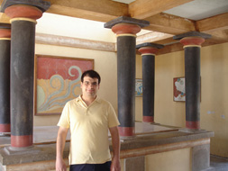</td>
              <td width="10" align="left">&nbsp;</td>
              <td width="100%" valign="middle" align="left">
                <p align="left"><strong>Evangelos Kalogerakis<br>
Associate Professor</strong><br>
                    <a href="https://www.ece.tuc.gr/en/home">ECE</a>, <a href="https://www.tuc.gr/en/home">Technical University of Crete</a><br>
                  <strong> Also research affiliate at </strong><a href="https://cyens.org.cy/">CYENS</a><br>
<br>
                    <strong> Email:</strong>[first four letters of my last name] [DOT] ai [DOT] lab [AT] gmail [DOT] com<br>
                </p>
              </td>
            </tr>
            <tr>
              <td colspan="4" align="left">
                <div align="justify">
                  <p><br>
                    <strong> Quick links:</strong> <a href="#publications">Publications</a>, <a href="#courses">Course information</a>,<a href="#talks">
                      Talks</a>,<a href="#students"> Students</a>, <a href="#services">Academic
                      Service</a>, <a href="https://scholar.google.com/citations?user=8TwcVQcAAAAJ">Google
                      Scholar</a>, <a href="https://www.youtube.com/user/vkalogerakis">YouTube</a></p>
                  <p><strong>Research Interests and short bio:</strong> Evangelos Kalogerakis' research deals with the development
                    of graphics+vision algorithms and techniques, empowered by
                    Machine Learning and Artificial Intelligence, to help people to easily create and process
                    representations of the 3D visual world. He is particularly
                    interested in algorithms that generate 3D models of objects,
                    scenes, animations, and intelligently process 3D scans,
                    geometric data, collections of shapes, images, and video.
                    His research has been supported by the European Research Council (<a href="https://www.ece.tuc.gr/en/news/item/new-pan-european-distinction-of-the-ece-school-of-the-technical-university-of-crete-for-the-second-year-in-a-row">ERC consolidator grant</a>)
					and grants from the National Science Foundation (NSF). 
					  
					He is currently an Associate Professor at the School of Electrical and Computer Engineering at the Technical University of Crete, where, starting in 2025, he leads a research group focused on graphics and vision. 
					 
					Previously, he was a tenured Associate Professor at the College of Information and Computer Sciences at the University of Massachusetts Amherst, which he initially joined as an Assistant Professor in 2012. Before that, he was a postdoctoral researcher at Stanford University from 2010 to 2012. He earned his PhD from the University of Toronto in 2010. His <a href="degrees/KALOGERAKIS_PhD_THESIS.pdf">PhD thesis </a> introduced machine learning techniques for geometry processing.
					  
                    He has served as Area Chair in CVPR, ICCV, ECCV, NIPS and on
                    technical paper committees for SIGGRAPH,
                    SIGGRAPH ASIA, Eurographics, and the Symposium on Geometry
                    Processing. He has also served as an Associate Editor in the
                    Editorial Boards of IEEE Transactions on Pattern Analysis
                    and Machine Intelligence (TPAMI) and IEEE Transactions on
                    Visualization &amp; Computer Graphics (TVCG). 
					He co-chaired <a href="https://eg2024.cyens.org.cy/">Eurographics 2024</a>. 
					He was listed as one of the <a href="https://www.aminer.cn/ai2000/2021/cg">100 most cited computer graphics scholars</a> in the world between 2010-2020 by the Tsinghua's
                    AMiner academic network.</p>
                  <p>
			      <strong>
				      <!-- <span class="importantnote"> 
						  I have multiple openings for MS/PhD/postdoc/intern positions funded by my ERC grant. If you are interested in applying to work with me, please first read  <a href="erc.html">here</a> before reaching out to me!	Note	that	I am on absence of leave from UMass Amherst -- I am not hiring new students at UMass Amherst.</span>-->
					</strong></p> 
                </div>
              </td>
            </tr>
          </tbody>
        </table>
        <table class="ptable" cellspacing="0" cellpadding="5" border="3" align="center">
          <tbody>
            <tr valign="middle">
              <td class="ptd" colspan="2" valign="middle">
                <h2><a name="publications">Selected Publications</a></h2>
                For a complete list, see <a href="https://scholar.google.com/citations?user=8TwcVQcAAAAJ">Google
					Scholar</a>. My students' names appear with <span class="student-color">brown font.</span>
              </td>
            </tr>

			  
           <tr valign="middle">
              <td class="ptd" width="270" valign="middle"><a href="https://lodurality.github.io/GEM3D/">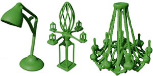</a></td>
              <td class="ptd" height="225" valign="middle" align="right">
                <div align="justify">
                  <p> <b>GEM3D: GEnerative Medial Abstractions for 3D Shape Synthesis</b><br>
<em>[<a href="https://arxiv.org/pdf/2402.16994.pdf">PAPER</a>][<a href="https://lodurality.github.io/GEM3D/">PAGE WITH CODE &amp; DATA</a>] </em><br>	
<i><span class="student-color">Dmitry Petrov, Pradyumn Goyal, Vikas Thamizharasan</span>, Vladimir G. Kim, Matheus Gadelha, Melinos Averkiou, Siddhartha Chaudhuri, Evangelos Kalogerakis</i>					
                    <br>
                    <i>Proceedings of ACM SIGGRAPH 2024</i><br>
					  
                    <span class="styleAbstract"><br>
                        <em>Abstract: </em>We introduce GEM3D -- a new deep, topology-aware generative model of 3D shapes. The key ingredient of our method is a neural skeleton-based representation encoding information on both shape topology and geometry. Through a denoising diffusion probabilistic model, our method first generates skeleton-based representations following the Medial Axis Transform (MAT), then generates surfaces through a skeleton-driven neural implicit formulation. The neural implicit takes into account the topological and geometric information stored in the generated skeleton representations to yield surfaces that are more topologically and geometrically accurate compared to previous neural field formulations. We discuss applications of our method in shape synthesis and point cloud reconstruction tasks, and evaluate our method both qualitatively and quantitatively. We demonstrate significantly more faithful surface reconstruction and diverse shape generation results compared to the state-of-the-art, also involving challenging scenarios of reconstructing and synthesizing structurally complex, high-genus shape surfaces from Thingi10K and ShapeNet.  </span> </p>
                </div>
              </td>
            </tr>				  
			  
			  
           <tr valign="middle">
              <td class="ptd" width="270" valign="middle"><a href="https://vikastmz.github.io/VecFusion/">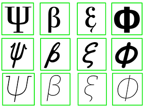</a></td>
              <td class="ptd" height="225" valign="middle" align="right">
                <div align="justify">
                  <p> <b>VecFusion: Vector Font Generation with Diffusion</b><br>
<em>[<a href="https://arxiv.org/pdf/2312.10540.pdf">PAPER</a>][<a href="https://vikastmz.github.io/VecFusion/">PAGE WITH CODE &amp; DATA</a>] </em><br>	
<i><span class="student-color">Vikas Thamizharasan*</span>, Difan Liu*, Shantanu Agarwal, Matthew Fisher, Michael Gharbi, Oliver Wang, Alec Jacobson, Evangelos Kalogerakis</i><br>
(* indicates equal contribution)&nbsp;                    <br>
                    <i>Proceedings of the Computer Vision and Pattern Recognition (CVPR) 2024<span class="importantnote">&nbsp;(Selected as highlight)</span></i><br>
					  
                    <span class="styleAbstract"><br>
                        <em>Abstract: </em>We present VecFusion, a new neural architecture that can generate vector   fonts with varying topological structures and precise control point   positions. Our approach is a cascaded diffusion model which consists of a   raster diffusion model followed by a vector diffusion model. The raster   model generates low-resolution, rasterized fonts with auxiliary control   point information, capturing the global style and shape of the font,   while the vector model synthesizes vector fonts conditioned on the   low-resolution raster fonts from the first stage. To synthesize long and   complex curves, our vector diffusion model uses a transformer   architecture and a novel vector representation that enables the modeling   of diverse vector geometry and the precise prediction of control   points. Our experiments show that, in contrast to previous generative   models for vector graphics, our new cascaded vector diffusion model   generates higher quality vector fonts, with complex structures and   diverse styles. </span> </p>
                </div>
              </td>
            </tr>				  
			  
           <tr valign="middle">
              <td class="ptd" width="270" valign="middle"><a href="https://vikastmz.github.io/NIVeL/">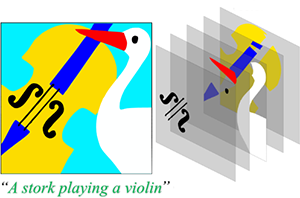</a></td>
              <td class="ptd" height="225" valign="middle" align="right">
                <div align="justify">
                  <p> <b>NIVeL: Neural Implicit Vector Layers for Text-to-Vector Generation</b><br>
<em>[<a href="https://arxiv.org/pdf/2405.15217">PAPER</a>][<a href="https://vikastmz.github.io/NIVeL/">PAGE WITH CODE &amp; DATA</a>] </em><br>	
<i><span class="student-color">Vikas Thamizharasan</span>, Difan Liu, Matthew Fisher, Nanxuan Zhao, Evangelos Kalogerakis, Michal Luk&#225;&#269;</i>				
                    <br>
                    <i>Proceedings of the Computer Vision and Pattern Recognition (CVPR) 2024</i><br>
					  
                    <span class="styleAbstract"><br>
                        <em>Abstract: </em>The success of denoising diffusion models in representing rich data distributions over 2D raster images has prompted research on extending them to other data representations, such as vector graphics. Unfortunately due to their variable structure and scarcity of vector training data, directly applying diffusion models on this domain remains a challenging problem. Using workarounds like optimization via Score Distillation Sampling (SDS) is also fraught with difficulty, as vector representations are non-trivial to directly optimize and tend to result in implausible geometries such as redundant or self-intersecting shapes. NIVeL addresses these challenges by reinterpreting the problem on an alternative, intermediate domain which preserves the desirable properties of vector graphics -- mainly sparsity of representation and resolution-independence. This alternative domain is based on neural implicit fields expressed in a set of decomposable, editable layers. by construction and allow for changes in topology while capturing the visual features of the modelled output. Based on our experiments, NIVeL produces text-to-vector graphics results of significantly better quality than the state-of-the-art.</span> </p>
                </div>
              </td>
            </tr>	  
				  
			  
           <tr valign="middle">
              <td class="ptd" width="270" valign="middle"><a href="https://open3dis.github.io/">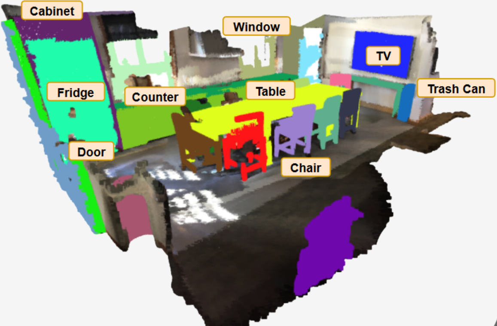</a> </td>
              <td class="ptd" height="225" valign="middle" align="right">
                <div align="justify">
                  <p> <b>Open3DIS: Open-vocabulary 3D Instance Segmentation with 2D Mask Guidance</b><br>
<em>[<a href="https://arxiv.org/pdf/2312.10671.pdf">PAPER</a>]&nbsp;[<a href="https://open3dis.github.io/">PAGE WITH CODE &amp; DATA</a>] </em><br>	
<i>Phuc Nguyen*, <span class="student-color">Tuan Duc Ngo*</span>, Evangelos Kalogerakis, Chuang Gan, Anh Tran, Cuong Pham, Khoi Nguyen<br>
(* indicates equal contribution) <br>
</i>				
                    <i>Proceedings of the Computer Vision and Pattern Recognition (CVPR) 2024</i><br>
					  
                    <span class="styleAbstract"><br>
                        <em>Abstract: </em>We introduce Open3DIS, a novel solution designed to tackle the problem   of Open-Vocabulary Instance Segmentation within 3D scenes. Objects   within 3D environments exhibit diverse shapes, scales, and colors,   making precise instance-level identification a challenging task. Recent   advancements in Open-Vocabulary scene understanding have made   significant strides in this area by employing class-agnostic 3D instance   proposal networks for object localization and learning queryable   features for each 3D mask. While these methods produce high-quality   instance proposals, they struggle with identifying small-scale and   geometrically ambiguous objects. The key idea of our method is a new   module that aggregates 2D instance masks across frames and maps them to   geometrically coherent point cloud regions as high-quality object   proposals addressing the above limitations. These are then combined with   3D class-agnostic instance proposals to include a wide range of objects   in the real world. To validate our approach, we conducted experiments   on three prominent datasets, including ScanNet200, S3DIS, and Replica,   demonstrating significant performance gains in segmenting objects with   diverse categories over the state-of-the-art approaches. </span> </p>
                </div>
              </td>
            </tr>	  
	

		
           <tr valign="middle">
              <td class="ptd" width="270" valign="middle"><a href="https://lodurality.github.io/ANISE/">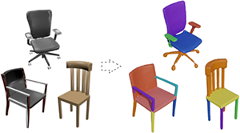</a> </td>
              <td class="ptd" height="225" valign="middle" align="right">
                <div align="justify">
                  <p> <b> ANISE: Assembly-based Neural Implicit Surface rEconstruction</b><br>
<em>[<a href="https://arxiv.org/pdf/2205.13682">PAPER</a>]&nbsp;[<a href="https://lodurality.github.io/ANISE/">PAGE WITH CODE &amp; DATA</a>] </em><br>	
                    <i><span class="student-color">Dmitry Petrov</span>, Matheus Gadelha, Radomir Mech, Evangelos Kalogerakis </i>				
                    <br>
                    <i>IEEE Transactions on Visualization and Computer Graphics, 2023</i><br>
					  <i>(also presented at SGP 2023)</i> <br>
					  
                    <span class="styleAbstract"><br>
                        <em>Abstract: </em> 
We present ANISE, a method that reconstructs a 3D shape from partial observations (images or sparse point clouds) using a part-aware neural implicit shape representation. The shape is formulated as an assembly of neural implicit functions, each representing a different part instance. In contrast to previous approaches, the prediction of this representation proceeds in a coarse-to-fine manner. Our model first reconstructs a structural arrangement of the shape in the form of geometric transformations of its part instances. Conditioned on them, the model predicts part latent codes encoding their surface geometry. Reconstructions can be obtained in two ways: (i) by directly decoding the part latent codes to part implicit functions, then combining them into the final shape; or (ii) by using part latents to retrieve similar part instances in a part database and assembling them in a single shape. We demonstrate that, when performing reconstruction by decoding part representations into implicit functions, our method achieves state-of-the-art part-aware reconstruction results from both images and sparse point clouds. When reconstructing shapes by assembling parts retrieved from a dataset, our approach significantly outperforms traditional shape retrieval methods even when significantly restricting the database size. We present our results in well-known sparse point cloud reconstruction and single-view reconstruction benchmarks.  </span> </p>
                </div>
              </td>
            </tr>	  

           <tr valign="middle">
              <td class="ptd" width="270" valign="middle"><a href="https://marios2019.github.io/CSN/"></a> </td>
              <td class="ptd" height="225" valign="middle" align="right">
                <div align="justify">
                  <p> <b>Cross-Shape Attention for Part Segmentation of 3D Point Clouds</b><br>
<em>[<a href="https://arxiv.org/pdf/2003.09053.pdf">PAPER</a>]&nbsp;[<a href="https://marios2019.github.io/CSN/">PAGE WITH CODE &amp; DATA</a>] </em><br>
                    <i><span class="student-color">Marios Loizou*</span>, Siddhant Garg*,  <span class="student-color">Dmitry Petrov*</span>, Melinos Averkiou, Evangelos Kalogerakis </i>				
                    <br>					 
					  (* indicates equal contribution)<br>
                    <i>Computer Graphics Forum, vol. 42, no. 5</i><br>
					  <i>(also in the Proceedings of SGP 2023)</i><br>
                    <a href="https://paperswithcode.com/sota/3d-semantic-segmentation-on-partnet?p=cross-shape-graph-convolutional-networks"></a><br>
					  
					  <span class="styleAbstract">
                        <em>Abstract: </em>
We present a deep learning method that propagates point-wise feature representations across shapes within a collection for the purpose of 3D shape segmentation. We propose a cross-shape attention mechanism to enable interactions between a shape's point-wise features and those of other shapes. The mechanism assesses both the degree of interaction between points and also mediates feature propagation across shapes, improving the accuracy and consistency of the resulting point-wise feature representations for shape segmentation. Our method also proposes a shape retrieval measure to select suitable shapes for cross-shape attention operations for each test shape. Our experiments demonstrate that our approach yields state-of-the-art results in the popular PartNet dataset.   </span> </p> 
                </div>
              </td>
            </tr>			
			  
		
		
		
           <tr valign="middle">
              <td class="ptd" width="270" valign="middle"><a href="">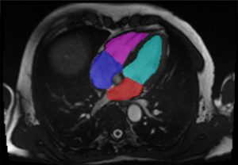</a> </td>
              <td class="ptd" height="225" valign="middle" align="right">
                <div align="justify">
                  <p> <b>Machine Learning for Automated Mitral Regurgitation Detection from Cardiac Imaging</b><br>
                    <em>[<a href="https://arxiv.org/pdf/2310.04871.pdf">PAPER</a>]&nbsp;</em><br>
                    <i>Ke Xiao, Erik Learned-Miller, Evangelos Kalogerakis, James Priest, Madalina Fiterau</i>				
                    <br>					  				  
                    <i>Proceedings of Medical Image Computing and Computer-Assisted Intervention - MICCAI 2023</i><br>
                    <span class="styleAbstract"><br>
                        <em>Abstract: </em>
Mitral regurgitation (MR) is a heart valve disease with potentially
fatal consequences that can only be forestalled through timely
diagnosis and treatment. Traditional diagnosis methods are expensive,
labor-intensive and require clinical expertise, posing a barrier to screening
for MR. To overcome this impediment, we propose a new semisupervised
model for MR classification called CUSSP. CUSSP operates
on cardiac magnetic resonance (CMR) imaging slices of the 4-chamber
view of the heart. It uses standard computer vision techniques and contrastive
models to learn from large amounts of unlabeled data, in conjunction
with specialized classifiers to establish the first ever automated
MR classification system using CMR imaging sequences. Evaluated on a
test set of 179 labeled sequences, CUSSP
attains an F1 score of 0.69 and a ROC-AUC score of 0.88, setting the
first benchmark result for detecting MR from CMR imaging sequences. </span> </p> 
                </div>
              </td>
            </tr>			
	
	
	
			  
           <tr valign="middle">
              <td class="ptd" width="270" valign="middle"><a href="https://zhan-xu.github.io/motion-rig/"></a> </td>
              <td class="ptd" height="225" valign="middle" align="right">
                <div align="justify">
                  <p> <b> MoRig: Motion-Aware Rigging of Character Meshes from Point Clouds</b><br>
<em>[<a href="https://arxiv.org/pdf/2210.09463.pdf">PAPER</a>]&nbsp;[<a href="https://youtu.be/sPxfnQ8j07Y">VIDEO</a>]&nbsp;[<a href="https://zhan-xu.github.io/motion-rig/">PAGE WITH CODE &amp; DATA</a>] </em><br>							  

                    <i><span class="student-color">Zhan Xu</span>, <span class="student-color">Yang Zhou</span>, Li Yi, Evangelos Kalogerakis </i>				
                    <br>
					  				  
                    <i>Proceedings of ACM SIGGRAPH ASIA 2022</i><i><span>
                        </span></i> <br>
					  
                    <span class="styleAbstract"><br>
                        <em>Abstract: </em> 
We present MoRig, a method that automatically rigs character meshes driven by single-view point cloud streams capturing the motion of performing characters. Our method is also able to animate the 3D meshes according to the captured point cloud motion. At the heart of our approach lies a deep neural network that encodes motion cues from the point clouds into features that are informative about the articulated parts of the performing character. These features guide the inference of an appropriate skeletal rig for the input mesh, which is then animated based on the input point cloud motion. Our method can rig and animate diverse characters, including humanoids, quadrupeds, and toys with varying articulations. It is designed to account for occluded  regions in the input point cloud sequences and any mismatches in the part proportions between the input mesh and captured character. Compared to other rigging approaches that ignore motion cues, our method produces more accurate skeletal rigs, which are also more appropriate for re-targeting motion from captured characters. </span> </p>
                </div>
              </td>
            </tr>	  

			  
     

            <tr valign="middle">
              <td class="ptd" width="270" valign="middle"><a href="https://people.cs.umass.edu/~dliu/projects/ASSET/"></a> </td>
              <td class="ptd" height="225" valign="middle" align="right">
                <div align="justify">
                  <p> <strong> ASSET: Autoregressive Semantic Scene Editing with Transformers at High Resolutions</strong><br>
<em>[<a href="papers/more/ASSET.pdf">PAPER</a>]
						         [<a href="https://people.cs.umass.edu/~dliu/projects/ASSET/">PAGE WITH CODE &amp; DATA</a>]</em><br>					  

                    <i><span class="student-color">Difan Liu</span>, Sandesh Shetty, Tobias Hinz, Matthew Fisher, Richard Zhang, Taesung Park, Evangelos Kalogerakis  </i>				
                    <br>
					  
                    <i>ACM Transactions on Graphics,&nbsp;Vol. 41, No. 4, 2022  &nbsp; &nbsp; &nbsp; &nbsp; 
						</i><br>
					  
                    <i>(also in the Proceedings of ACM SIGGRAPH 2022)</i><i><span>
                        </span></i> <br>
					  
                    <span class="styleAbstract"><br>
                        <em>Abstract: </em> 
        We present ASSET, a neural architecture for automatically modifying an input high-resolution image according to a user's edits on its semantic segmentation map. Our architecture is based on a transformer with a novel attention mechanism. Our key idea is to sparsify the transformer's attention matrix at high resolutions, guided by dense attention extracted at lower image resolution. While previous attention mechanisms are computationally too expensive for handling high-resolution images or are overly constrained within specific image regions hampering long-range interactions, our proposed attention mechanism is both computationally efficient and effective. Our sparsified attention mechanism is able to capture long-range interactions and context, leading to synthesizing interesting phenomena in scenes, such as reflections of landscapes onto water or flora consistent with the rest of the landscape, that were not possible to generate reliably with previous convnets and transformer approaches. We present qualitative and quantitative results, along with user studies, demonstrating the effectiveness of our method. </span> </p>
                </div>
              </td>
            </tr>
			  

           <tr valign="middle">
              <td class="ptd" width="270" valign="middle"><a href="https://nv-tlabs.github.io/MvDeCor/">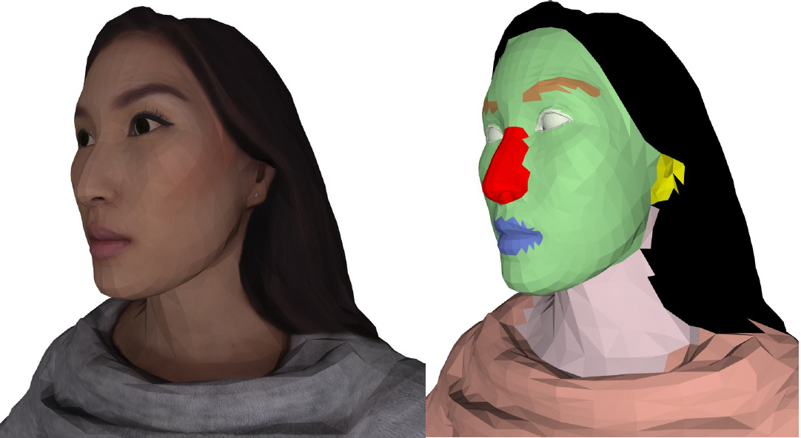</a> </td>
              <td class="ptd" height="225" valign="middle" align="right">
                <div align="justify">
                  <p> <strong> MvDeCor: Multi-view Dense Correspondence Learning for Fine-Grained 3D Segmentation</strong><br>
<em>[<a href="papers/more/MvDeCor.pdf">PAPER</a>]
						         [<a href="https://nv-tlabs.github.io/MvDeCor/">PAGE WITH CODE &amp; DATA</a>]</em><br>					  

                    <i><span class="student-color">Gopal Sharma</span>, Kangxue Yin, Subhransu Maji, Evangelos Kalogerakis, Or Litany, Sanja Fidler</i>				
                    <br>
					  					  
                    <i>Proceedings of the European Conference on Computer Vision (ECCV) 2022</i><i><span>
                        </span></i> <br>
					  
                    <span class="styleAbstract"><br>
                        <em>Abstract: </em> 
We propose to utilize self-supervised techniques in the 2D
domain for fine-grained 3D shape segmentation tasks. This is inspired by
the observation that view-based surface representations are more effective
at modeling high-resolution surface details and texture than their 3D
counterparts based on point clouds or voxel occupancy. Specifically, given
a 3D shape, we render it from multiple views, and set up a dense correspondence
learning task within the contrastive learning framework. As a
result, the learned 2D representations are view-invariant and geometrically
consistent, leading to better generalization when trained on a limited
number of labeled shapes than alternatives based on self-supervision
in 2D or 3D alone. Experiments on textured (RenderPeople) and untextured
(PartNet) 3D datasets show that our method outperforms state-ofthe-
art alternatives in fine-grained part segmentation. The improvements
over baselines are greater when only a sparse set of views is available for
training or when shapes are textured, indicating that MvDeCor benefits
from both 2D processing and 3D geometric reasoning. </span> </p>
                </div>
              </td>
            </tr>
			  
			  
			  
            <tr valign="middle">
              <td class="ptd" width="270" valign="middle"><a href="https://yzhou359.github.io/video_reenact/">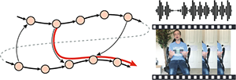</a> </td>
              <td class="ptd" height="225" valign="middle" align="right">
                <div align="justify">
                  <p> <strong> Audio-driven Neural Gesture Reenactment with Video Motion Graphs</strong><br>
<em>[<a href="papers/more/VideoMotionGraphs.pdf">PAPER</a>]
						       [<a href="https://yzhou359.github.io/video_reenact/">PAGE WITH CODE &amp; DATA</a>]</em><br>					  

					  
                    <i><span class="student-color">Yang Zhou</span>, Jimei Yang, Dingzeyu Li, Jun Saito, Deepali Aneja, Evangelos Kalogerakis </i>
                    <br>
                    <i>Proceedings of the Computer Vision and Pattern Recognition (CVPR) 2022</i><i><span>
                        </span></i> <br>
                    <span class="styleAbstract"><br>
                        <em>Abstract: </em> 
Human speech is often accompanied by body gestures including arm and hand gestures. We present a method that reenacts a high-quality video with gestures matching a target speech audio. The key idea of our method is to split and re-assemble clips from a reference video through a novel video motion graph encoding valid transitions between clips. To seamlessly connect different clips in the reenactment, we propose a pose-aware video blending network which synthesizes video frames around the stitched frames between two clips. Moreover, we developed an audio-based gesture searching algorithm to find the optimal order of the reenacted frames. Our system generates reenactments that are consistent with both the audio rhythms and the speech content. We evaluate our synthesized video quality quantitatively, qualitatively, and with user studies, demonstrating that our method produces videos of much higher quality and consistency with the target audio compared to previous work and baselines.
 </span> </p>
                </div>
              </td>
            </tr>
			  
			  
			  
            <tr valign="middle">
              <td class="ptd" width="270" valign="middle"><a href="https://zhan-xu.github.io/parts/"></a> </td>
              <td class="ptd" height="225" valign="middle" align="right">
                <div align="justify">
                  <p> <strong> APES: Articulated Part Extraction from Sprite Sheets</strong><br>
<em>[<a href="papers/more/APES.pdf">PAPER</a>]
						       [<a href="https://zhan-xu.github.io/parts/">PAGE WITH CODE &amp; DATA</a>]</em><br>	
					  
                    <i><span class="student-color">Zhan Xu</span>, Matthew Fisher, <span class="student-color">Yang Zhou</span>, Deepali Aneja, Rushikesh Dudhat, Li Yi, Evangelos Kalogerakis</i>
                    <br>
                    <i>Proceedings of the Computer Vision and Pattern Recognition (CVPR) 2022</i><i><span>&nbsp;
                        </span></i> <br>					  
                    <span class="styleAbstract"><br>
                        <em>Abstract: </em>
Rigged puppets are one of the most prevalent representations to create 2D character animations. Creating these puppets requires partitioning characters into independently moving parts. In this work, we present a method to automatically identify such articulated parts from a small set of character poses shown in a sprite sheet, which is an illustration of the character that artists often draw before puppet creation. Our method is trained to infer articulated body parts, e.g. head, torso and limbs, that can be re-assembled to best reconstruct the given poses. Our results demonstrate significantly better performance than alternatives qualitatively and quantitatively.</span> </p>
                </div>
              </td>
            </tr>			  
			  
			  
            <tr valign="middle">
              <td class="ptd" width="270" valign="middle"><a href="https://hippogriff.github.io/prifit/">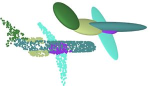</a> </td>
              <td class="ptd" height="225" valign="middle" align="right">
                <div align="justify">
                  <p> <strong> PriFit: Learning to Fit Primitives Improves Few Shot Point Cloud Segmentation</strong><br>
<em>[<a href="papers/more/PriFit.pdf">PAPER</a>]
						[<a href="https://hippogriff.github.io/prifit/">PAGE WITH CODE &amp; DATA</a>]
						</em><br>
                    <i><span class="student-color">Gopal Sharma</span>, Bidya Dash, Aruni RoyChowdhury, Matheus Gadelha, <span class="student-color">Marios Loizou</span>,  Liangliang Cao, Rui Wang, Erik Learned-Miller, Subhransu Maji, Evangelos Kalogerakis</i>
                    <br>
                    <i>Computer Graphics Forum, Vol. 41, No. 5, 2022&nbsp; <br>
                    (also in the Proceedings of SGP 2022)</i><i><span>&nbsp;
                        </span></i> <br>					  
                    <span class="styleAbstract"><br>
                        <em>Abstract: </em>
We present PRIFIT, a semi-supervised approach for label-efficient learning of 3D point cloud segmentation networks. PRIFIT
combines geometric primitive fitting with point-based representation learning. Its key idea is to learn point representations
whose clustering reveals shape regions that can be approximated well by basic geometric primitives, such as cuboids and ellipsoids.
The learned point representations can then be re-used in existing network architectures for 3D point cloud segmentation,
and improves their performance in the few-shot setting. According to our experiments on the widely used ShapeNet and PartNet
benchmarks, PRIFIT outperforms several state-of-the-art methods in this setting, suggesting that decomposability into primitives
is a useful prior for learning representations predictive of semantic parts. We present a number of ablative experiments
varying the choice of geometric primitives and downstream tasks to demonstrate the effectiveness of the method.</span> </p>
                </div>
              </td>
            </tr>		
			  
			  
			  
            <tr valign="middle">
              <td class="ptd" width="270" valign="middle"><a href="https://buildingnet.org/">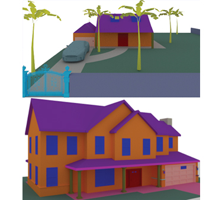</a> </td>
              <td class="ptd" height="225" valign="middle" align="right">
                <div align="justify">
                  <p> <strong> BuildingNet: Learning to
                      Label 3D Buildings</strong><br>
<em>[<a href="papers/BuildingNet/BuildingNet.pdf">PAPER</a>][<a href="https://youtu.be/rl30WJo_EBo">VIDEO</a>][<a href="https://buildingnet.org/">PAGE WITH CODE &amp; DATA</a>]</em><br>
                    <i>Pratheba Selvaraju, <span class="student-color">Mohamed Nabail</span>, <span class="student-color">Marios Loizou</span>, Maria Maslioukova, Melinos Averkiou, Andreas
                    Andreou, Siddhartha Chaudhuri, Evangelos Kalogerakis</i>
                    <br>
                    <i>Proceedings of the International Conference on
                    Computer Vision (ICCV) 2021 </i> <i><span class="importantnote">(Selected for Oral
                          Presentation)</span></i><br>
                    <span class="styleAbstract"><br>
                        <em>Abstract: </em>We introduce BuildingNet:
                      (a) a large-scale dataset of 3D building models whose
                      exteriors are consistently labeled, (b) a graph neural
                      network that labels building meshes by analyzing spatial
                      and structural relations of their geometric primitives. To
                      create our dataset, we used crowdsourcing combined with
                      expert guidance, resulting in 513K annotated mesh
                      primitives, grouped into 292K semantic part components
                      across 2K building models. The dataset covers several
                      building categories, such as houses, churches,
                      skyscrapers, town halls, libraries, and castles. We
                      include a benchmark for evaluating mesh and point cloud
                      labeling. Buildings have more challenging structural
                      complexity compared to objects in existing benchmarks
                      (e.g., ShapeNet, PartNet), thus, we hope that our dataset
                      can nurture the development of algorithms that are able to
                      cope with such large-scale geometric data for both vision
                      and graphics tasks e.g., 3D semantic segmentation,
                      part-based generative models, correspondences, texturing,
                      and analysis of point cloud data acquired from real-world
                      buildings. Finally, we show that our mesh-based graph
                      neural network significantly improves performance over
                      several baselines for labeling 3D meshes.</span> </p>
                </div>
              </td>
            </tr>
			  
            <tr valign="middle">
              <td class="ptd" width="270" valign="middle"><a href="https://people.cs.umass.edu/~dliu/projects/NeuralStrokes/">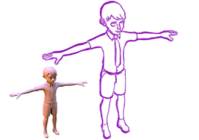</a> </td>
              <td class="ptd" height="225" valign="middle" align="right">
                <div align="justify">
                  <p> <strong> Neural Strokes: Stylized
                      Line Drawing of 3D Shapes</strong><br>
<em>[<a href="papers/neural_strokes/NeuralStrokes.pdf">PAPER</a>] [<a href="https://people.cs.umass.edu/~dliu/projects/NeuralStrokes/">PAGE WITH CODE &amp; DATA</a>]</em><br>
                    <i><span class="student-color">Difan Liu</span>, Matthew Fisher, Aaron Hertzmann, Evangelos Kalogerakis</i> <br>
                    <i>Proceedings of the International Conference on
                    Computer Vision (ICCV) 2021&nbsp;</i><br>
                    <span class="styleAbstract"><br>
                        <em>Abstract: </em>This paper introduces a
                      model for producing stylized line drawings from 3D shapes.
                      The model takes a 3D shape and a viewpoint as input, and
                      outputs a drawing with textured strokes, with variations
                      in stroke thickness, deformation, and color learned from
                      an artist's style. The model is fully differentiable. We
                      train its parameters from a single training drawing of
                      another 3D shape. We show that, in contrast to previous
                      image-based methods, the use of a geometric representation
                      of 3D shape and 2D strokes allows the model to transfer
                      important aspects of shape and texture style while
                      preserving contours. Our method outputs the resulting
                      drawing in a vector representation, enabling richer
                      downstream analysis or editing in interactive
                      applications.</span> </p>
                </div>
              </td>
            </tr>
			  
            <tr valign="middle">
              <td class="ptd" width="270" valign="middle"><a href="papers/more/Urban_City_Texturing.pdf"></a> </td>
              <td class="ptd" height="225" valign="middle" align="right">
                <div align="justify">
                  <p> <strong> Projective Urban Texturing</strong><br>
<em>[<a href="papers/more/Urban_City_Texturing.pdf">PAPER</a>]</em><br>
                    <i><span class="student-color">Yiangos Georgiou</span>, Melinos Averkiou, Tom Kelly, Evangelos Kalogerakis</i> <br>
                    <i>Proceedings of the International Conference on 3D Vision (3DV) 2021</i><br>
                    <span class="styleAbstract"><br>
                        <em>Abstract: </em>
				      This paper proposes a method for automatic generation of textures for 3D city meshes in immersive urban environments. Many recent pipelines capture or synthesize large quantities of city geometry using scanners or procedural modeling pipelines. Such geometry is intricate and realistic, however the generation of photo-realistic textures for such large scenes remains a problem. We propose to generate textures for input target 3D meshes driven by the textural style present in readily available datasets of panoramic photos capturing urban environments. Re-targeting such 2D  datasets to 3D  geometry is challenging because 
the underlying shape, size, and layout of   the urban structures in the photos do not correspond to the ones  in the target meshes. Photos also often have objects (e.g., trees, vehicles) that may not even be present in the target  geometry. To address these issues we present a method, called Projective Urban Texturing (PUT), which  re-targets textural style  from real-world panoramic images to unseen urban meshes. PUT relies on contrastive and adversarial training of a neural architecture designed for unpaired image-to-texture translation. The generated textures are stored in a texture atlas applied to the target 3D  mesh geometry.
We demonstrate both quantitative and qualitative evaluation of the generated  textures.
					  </span> </p>
                </div>
              </td>
            </tr>
			  
            <tr valign="middle">
              <td class="ptd" width="270" valign="middle"><a href="https://people.umass.edu/%7Eyangzhou/MakeItTalk/">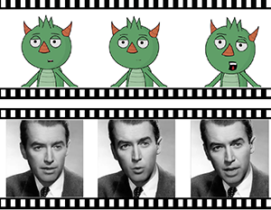</a> </td>
              <td class="ptd" height="225" valign="middle" align="right">
                <div align="justify">
                  <p> <strong> MakeItTalk: Speaker-Aware Talking Head Animation</strong><br>
[<a href="papers/makeittalk/MakeItTalk.pdf"><i>PAPER</i></a>][<a

                      href="https://youtu.be/vUMGKASgbf8">VIDEO</a>][<i><a href="https://people.umass.edu/%7Eyangzhou/MakeItTalk/">PAGE
                        WITH CODE &amp; DATA</a></i>] <br>
                    <i><span class="student-color">Yang Zhou</span>, Xintong Han, Eli Shechtman, Jose
                    Echevarria, Evangelos Kalogerakis, Dingzeyu Li</i>
                    <br>
                    <i>ACM Transactions on Graphics, Vol. 39, No. 6,
                        2020 (to appear)<br>
                        (also in the Proceedings of ACM SIGGRAPH ASIA
                        2020)</i><br>
                    <span class="styleAbstract"><br>
                        <em>Abstract: </em>We present a method that
                      generates expressive talking-head videos from a single
                      facial image with audio as the only input. In contrast to
                      previous attempts to learn direct mappings from audio to
                      raw pixels for creating talking faces, our method first
                      disentangles the content and speaker information in the
                      input audio signal. The audio content robustly controls
                      the motion of lips and nearby facial regions, while the
                      speaker information determines the specifics of facial
                      expressions and the rest of the talking-head dynamics.
                      Another key component of our method is the prediction of
                      facial landmarks reflecting the speaker-aware dynamics.
                      Based on this intermediate representation, our method
                      works with many portrait images in a single unified
                      framework, including artistic paintings, sketches, 2D
                      cartoon characters, Japanese mangas, and stylized
                      caricatures. In addition, our method generalizes well for
                      faces and characters that were not observed during
                      training. We present extensive quantitative and
                      qualitative evaluation of our method, in addition to user
                      studies, demonstrating generated talking-heads of
                      significantly higher quality compared to prior
                      state-of-the-art methods.</span> </p>
                </div>
              </td>
            </tr>
            <tr valign="middle">
              <td class="ptd" width="270" valign="middle"><a href="https://hippogriff.github.io/parsenet/">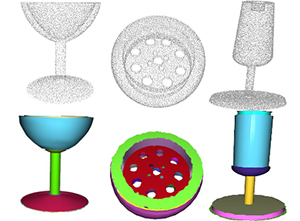</a> </td>
              <td class="ptd" height="225" valign="middle" align="right">
                <div align="justify">
                  <p> <b> ParSeNet: A Parametric Surface Fitting Network
                      for 3D Point Clouds</b><br>
<i>[</i><i><a href="papers/parsenet/parsenet.pdf">PAPER</a></i>]
                    <i>[</i><i><a href="https://hippogriff.github.io/parsenet/">PAGE
                        WITH CODE &amp; DATA</a></i>] <br>
                    <i><span class="student-color">Gopal Sharma</span>, <span class="student-color">Difan Liu</span>, Subhransu Maji, Evangelos Kalogerakis, Siddhartha Chaudhuri, Radomir
                    Mech</i> <br>
                    <i>Proceedings of the European Conference on
                        Computer Vision (ECCV) 2020</i> <br>
                    <span class="styleAbstract"><br>
                        <em>Abstract: </em>We propose a novel,
                      end-to-end trainable, deep network called ParSeNet that
                      decomposes a 3D point cloud into parametric surface
                      patches, including B-spline patches as well as basic
                      geometric primitives. ParSeNet is trained on a large-scale
                      dataset of man-made 3D shapes and captures high-level
                      semantic priors for shape decomposition. It handles a much
                      richer class of primitives than prior work, and allows us
                      to represent surfaces with higher fidelity. It also
                      produces repeatable and robust parametrizations of a
                      surface compared to purely geometric approaches. We
                      present extensive experiments to validate our approach
                      against analytical and learning-based alternatives.</span>
                  </p>
                </div>
              </td>
            </tr>
            <tr valign="middle">
              <td class="ptd" width="270" valign="middle"><a href="https://mgadelha.me/selfsupacd/">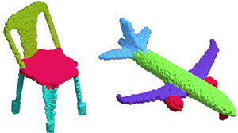</a> </td>
              <td class="ptd" height="225" valign="middle" align="right">
                <div align="justify">
                  <p><strong>Label-Efficient Learning on Point Clouds using
                      Approximate Convex Decompositions</strong><br>
                      <i>[</i><i><a href="papers/more/acd-eccv20.pdf">PAPER</a>]
                      </i><i>[<a href="https://mgadelha.me/selfsupacd/">PAGE WITH
                          CODE &amp; DATA</a>]</i><br>
                    <i>Matheus Gadelha, Aruni RoyChowdhury, <span class="student-color">Gopal Sharma</span>, Evangelos Kalogerakis, Liangliang Cao, Erik
                        Learned-Miller, Rui Wang, Subhransu Maji<br>
Proceedings of the European Conference on Computer
                    Vision (ECCV) 2020</i> <span class="styleAbstract"><br>
                    <br>
                    <em>Abstract: </em>The problems of shape
                      classification and part segmentation from 3D point clouds
                      have garnered increasing attention in the last few years.
                      Both of these problems, however, suffer from relatively
                      small training sets, creating the need for statistically
                      efficient methods to learn 3D shape representations. In
                      this paper, we investigate the use of Approximate Convex
                      Decompositions (ACD) as a self-supervisory signal for
                      label-efficient learning of point cloud representations.
                      We show that using ACD to approximate ground truth
                      segmentation provides excellent self-supervision for
                      learning 3D point cloud representations that are highly
                      effective on downstream tasks. We report improvements over
                      the state-of-the-art for unsupervised representation
                      learning on the ModelNet40 shape classification dataset
                      and significant gains in few-shot part segmentation on the
                      ShapeNetPart dataset. </span><span class="styleAbstract"><br>
                    </span> </p>
                </div>
              </td>
            </tr>
            <tr valign="middle">
              <td class="ptd" width="270" valign="middle"><a href="https://zhan-xu.github.io/rig-net/">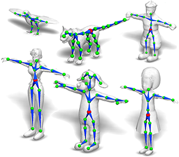</a> </td>
              <td class="ptd" height="225" valign="middle" align="right">
                <div align="justify">
                  <p><span><strong>RigNet: Neural Rigging for Articulated
                        Characters</strong><br>
                      </span><i>[</i><span><i><a href="papers/rignet/rignet.pdf">PAPER</a>]</i></span><i>[<a

                          href="https://youtu.be/J90VETgWIDg">VIDEO</a>]</i><span><i>
                          [<a href="https://zhan-xu.github.io/rig-net/">PAGE
                            WITH CODE &amp; DATA</a>]</i></span><span>
                      </span><span><br>
                      </span> <span><em><span class="student-color">Zhan Xu</span>, <span class="student-color">Yang Zhou</span>, Evangelos Kalogerakis, Chris Landreth, Karan Singh</em><br>
                      </span><i>ACM Transactions on Graphics,
                        Vol. 39, No. 4, 2020<span><br>
                        </span>(also in the Proceedings of ACM
                        SIGGRAPH 2020<span>)</span><span><br>
                        </span></i><span class="styleAbstract"><br>
                        <em>Abstract: </em> We present RigNet, an
                      end-to-end automated method for producing animation rigs
                      from input character models. Given an input 3D model
                      representing an articulated character, RigNet predicts a
                      skeleton that matches the animator expectations in joint
                      placement and topology. It also estimates surface skin
                      weights based on the predicted skeleton. Our method is
                      based on a deep architecture that directly operates on the
                      mesh representation without making assumptions on shape
                      class and structure. The architecture is trained on a
                      large and diverse collection of rigged models, including
                      their mesh, skeletons and corresponding skin weights. Our
                      evaluation is three-fold: we show better results than
                      prior art when quantitatively compared to animator rigs;
                      qualitatively we show that our rigs can be expressively
                      posed and animated at multiple levels of detail; and
                      finally, we evaluate the impact of various algorithm
                      choices on our output rigs. </span> </p>
                  <p><span class="styleAbstract"><br>
                    </span> </p>
                </div>
              </td>
            </tr>
            <tr valign="middle">
              <td class="ptd" width="270" valign="middle"><a href="https://github.com/marios2019/learning_part_boundaries">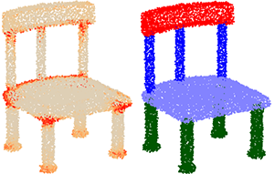</a> </td>
              <td class="ptd" height="225" valign="middle" align="right">
                <div align="justify">
                  <p><span><b>Learning Part Boundaries from 3D Point Clouds</b><br>
                      </span><i>[</i><span><i><a href="papers/more/learningpartboundaries.pdf">PAPER</a>]</i></span><span><i>
                          [<a href="https://github.com/marios2019/learning_part_boundaries">PAGE
                            WITH CODE &amp; DATA</a>]</i></span><span>
                      </span><span><br>
                      </span> <span><span class="student-color">Marios Loizou</span>, Melinos Averkiou, Evangelos Kalogerakis<br>
                      </span><i>Computer Graphics Forum<span>,
                        </span>Vol. 39, No. 5, 2020<span><br>
                        </span>(also in the Proceedings of SGP 2020<span>)</span><span><br>
                        </span></i><span class="styleAbstract"><br>
                        <em>Abstract: </em>We present a method that
                      detects boundaries of parts in 3D shapes represented as
                      point clouds. Our method is based on a graph convolutional
                      network architecture that outputs a probability for a
                      point to lie in an area that separates two or more parts
                      in a 3D shape. Our boundary detector is quite generic: it
                      can be trained to localize boundaries of semantic parts or
                      geometric primitives commonly used in 3D\ modeling. Our
                      experiments demonstrate that our method can extract more
                      accurate boundaries that are closer to ground-truth ones
                      compared to alternatives. We also demonstrate an
                      application of our network to fine-grained semantic shape
                      segmentation, where we also show improvements in terms of
                      part labeling performance. </span> </p>
                  <p><span class="styleAbstract"><br>
                    </span> </p>
                </div>
              </td>
            </tr>
            <tr valign="middle">
              <td class="ptd" width="270" valign="middle"><a href="https://people.cs.umass.edu/%7Edliu/projects/NeuralContours/">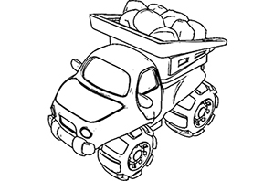</a> </td>
              <td class="ptd" height="225" valign="middle" align="right">
                <div align="justify">
                  <p><span><strong>Neural Contours: Learning to Draw Lines from
                        3D Shapes</strong><br>
                      </span><i>[</i><span><i><a href="papers/neural_contours/NeuralContours.pdf">PAPER</a>]
                          [<a href="https://people.cs.umass.edu/%7Edliu/projects/NeuralContours/">PAGE
                            WITH CODE &amp; DATA</a>]</i></span><span>
                      </span><span><br>
                      </span> <span><em><span class="student-color">Difan Liu</span>, <span class="student-color">Mohamed Nabail</span>, Evangelos Kalogerakis, Aaron Hertzmann</em><br>
                      </span><i>Proceedings of the Computer Vision and Pattern
                        Recognition (CVPR) 2020</i><i><span><br>
                        </span></i><span class="styleAbstract"><br>
                        <em>Abstract: </em> This paper introduces a
                      method for learning to generate line drawings from 3D
                      models. Our architecture incorporates a differentiable
                      module operating on geometric features of the 3D model,
                      and an image-based module operating on view-based shape
                      representations. At test time, geometric and view-based
                      reasoning are combined by a neural ranking module to
                      create a line drawing. The model is trained on a large
                      number of crowdsourced comparisons of line drawings.
                      Experiments demonstrate that our method achieves
                      significant improvements in line drawing over the
                      state-of-the-art when evaluated on standard benchmarks,
                      resulting in drawings that are comparable to those
                      produced by experienced human artists. </span> </p>
                  <p><span class="styleAbstract"><br>
                    </span> </p>
                </div>
              </td>
            </tr>
            <tr valign="middle">
              <td class="ptd" width="270" valign="middle"> <a href="https://people.umass.edu/%7Eyangzhou/scenegraphnet/">
                  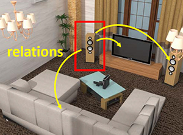 </a> </td>
              <td class="ptd" height="225" valign="middle" align="right">
                <div align="justify">
                  <p><strong>SceneGraphNet: Neural Message Passing for 3D
                        Indoor Scene Augmentation<br>
                  </strong> <em> [</em><span><i><a href="papers/scenegraphnet/ICCV_SceneGraphNet.pdf">PAPER</a>]
                          [<a href="https://people.umass.edu/%7Eyangzhou/scenegraphnet/">PAGE
                            WITH CODE &amp; DATA</a>]</i></span><span> </span><span><br>
                      </span><span><em><span class="student-color">Yang Zhou</span>, Zachary While, Evangelos Kalogerakis</em><br>
                      </span><i>Proceedings of the International Conference on
                        Computer Vision (ICCV) 2019</i><i><span><br>
                        </span></i><span class="styleAbstract"><br>
                        <em>Abstract: </em>In this paper we propose a
                      neural message passing approach to augment an input 3D
                      indoor scene with new objects matching their surroundings.
                      Given an input, potentially incomplete, 3D scene and a
                      query location, our method predicts a probability
                      distribution over object types that fit well in that
                      location. Our distribution is predicted though passing
                      learned messages in a dense graph whose nodes represent
                      objects in the input scene and edges represent spatial and
                      structural relationships. By weighting messages through an
                      attention mechanism, our method learns to focus on the
                      most relevant surrounding scene context to predict new
                      scene objects. We found that our method significantly
                      outperforms state-of-the-art approaches in terms of
                      correctly predicting objects missing in a scene based on
                      our experiments in the SUNCG dataset. We also demonstrate
                      other applications of our method, including context-based
                      3D object recognition and iterative scene generation. </span>
                  </p>
                  <p><span class="styleAbstract"><br>
                    </span> </p>
                </div>
              </td>
            </tr>
            <tr valign="middle">
              <td class="ptd" width="270" valign="middle"> <a href="https://people.cs.umass.edu/%7Ezhanxu/projects/AnimSkelVolNet/">
                   </a> </td>
              <td class="ptd" height="225" valign="middle" align="right">
                <div align="justify">
                  <p><span><strong>Predicting Animation Skeletons for 3D
                        Articulated Models via Volumetric Nets</strong><br>
                      </span><i>[</i><span><i><a href="papers/AnimationSkeletons/AnimSkelVolNet.pdf">PAPER</a>]
                          [<a href="https://people.cs.umass.edu/%7Ezhanxu/projects/AnimSkelVolNet/">PAGE
                            WITH CODE &amp; DATA</a>]</i></span> <i><br>
                      </span><span><em><span class="student-color">Zhan Xu</span>, <span class="student-color">Yang Zhou</span>, Evangelos Kalogerakis, Karan Singh</em><br>
                      </span><i>Proceedings of the
                        International Conference on 3D Vision (3DV) 2019<span class="importantnote">&nbsp;(Selected for Oral
                          Presentation)</span></i><span><span><br>
                        </span></i><span class="styleAbstract"><br>
                        <em>Abstract: </em> We present a learning
                      method for predicting animation skeletons for input 3D
                      models of articulated characters. In contrast to previous
                      approaches that fit pre-defined skeleton templates or
                      predict fixed sets of joints, our method produces an
                      animation skeleton tailored for the structure and geometry
                      of the input 3D model. Our architecture is based on a
                      stack of hourglass modules trained on a large dataset of
                      3D rigged characters mined from the web. It operates on
                      the volumetric representation of the input 3D shapes
                      augmented with geometric shape features that provide
                      additional cues for joint and bone locations. Our method
                      also enables intuitive user control of the level-of-detail
                      for the output skeleton. Our evaluation demonstrates that
                      our approach predicts animation skeletons that are much
                      more similar to the ones created by humans compared to
                      several alternatives and baselines. <br>
                    </span> </p>
                </div>
              </td>
            </tr>
            <tr valign="middle">
              <td class="ptd" width="270" valign="middle"> <a href="papers/more/PEN.pdf">
                  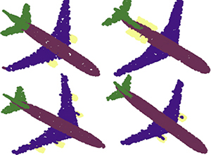 </a> </td>
              <td class="ptd" height="225" valign="middle" align="right">
                <div align="justify">
                  <p><span><strong>Learning Point Embeddings from Shape
                        Repositories for Few-Shot Segmentation</strong><br>
                      </span><i>[</i><span><i><a href="papers/more/PEN.pdf">PAPER</a>]</i></span>
                      <i><span class="importantnote">&nbsp;</span></i><span><br>
                      </span><span><em><span class="student-color">Gopal Sharma</span>, Evangelos Kalogerakis,
                          Subhransu Maji</em><br>
                      </span><i>Proceedings of the International Conference on
                        3D Vision (3DV) 2019<span class="importantnote">&nbsp;(Selected for Oral
                          Presentation)</span></i><span></i><i><span><br>
                        </span></i><span class="styleAbstract"><br>
                        <em>Abstract: </em> User generated 3D shapes
                      in online repositories contain rich information about
                      surfaces, primitives, and their geometric relations, often
                      arranged in a hierarchy. We present a framework for
                      learning representations of 3D shapes that reflect the
                      information present in this meta data and show that it
                      leads to improved generalization for semantic segmentation
                      tasks. Our approach is a point embedding network that
                      generates a vectorial representation of the 3D point such
                      that it reflects the grouping hierarchy and tag data. The
                      main challenge is that the data is highly variable and
                      noisy. To this end, we present tree-aware metrics to
                      supervise a metric-learning approach and demonstrate that
                      such learned embeddings offer excellent transfer to
                      semantic segmentation tasks, especially when training data
                      is limited. <br>
                      <br>
                    </span> </p>
                </div>
              </td>
            </tr>
            <tr valign="middle">
              <td class="ptd" width="270" valign="middle"> <a href="https://github.com/ericyi/articulated-part-induction/">
                  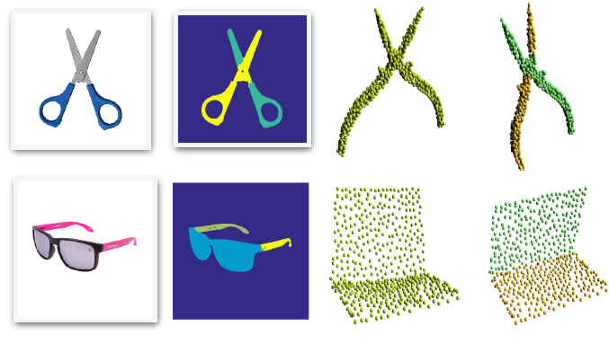 </a>
              </td>
              <td class="ptd" height="225" valign="middle" align="right">
                <div align="justify">
                  <p><span><strong>Deep Part Induction from Articulated Object
                        Pairs</strong><br>
                      </span><i> [</i><span><i><a href="https://kalo-ai.github.io/papers/partinduction/partinduction.pdf">PAPER</a>]
                          [<a href="https://github.com/ericyi/articulated-part-induction/">PAGE
                            WITH CODE &amp; DATA</a>]</i></span><span> </span><span><br>
                      </span><span><em>Li Yi, <span class="student-color">Haibin Huang</span>, <span class="student-color">Difan Liu</span>, Evangelos Kalogerakis, Hao Su, Leonidas Guibas</em><br>
                      </span><i>ACM Transactions on Graphics, Vol. 37, No. 6,
                        2018<br>
                        (also in the Proceedings of ACM SIGGRAPH ASIA
                        2018<span>)</span></i><i><span><br>
                        </span></i><span class="styleAbstract"><br>
                        <em>Abstract: </em> Object functionality is
                      often expressed through part articulation -- as when the
                      two rigid parts of a scissor pivot against each other to
                      perform the cutting function. Such articulations are often
                      similar across objects within the same functional
                      category. In this paper, we explore how the observation of
                      different articulation states provides evidence for part
                      structure and motion of 3D objects. Our method takes as
                      input a pair of unsegmented shapes representing two
                      different articulation states of two functionally related
                      objects, and induces their common parts along with their
                      underlying rigid motion. This is a challenging setting, as
                      we assume no prior shape structure, no prior shape
                      category information, no consistent shape orientation, the
                      articulation states may belong to objects of different
                      geometry, plus we allow inputs to be noisy and partial
                      scans, or point clouds lifted from RGB images. Our method
                      learns a neural network architecture with three modules
                      that respectively propose correspondences, estimate 3D
                      deformation flows, and perform segmentation. To achieve
                      optimal performance, our architecture alternates between
                      correspondence, deformation flow, and segmentation
                      prediction iteratively in an ICP-like fashion. Our results
                      demonstrate that our method significantly outperforms
                      state-of-the-art techniques in the task of discovering
                      articulated parts of objects. In addition, our part
                      induction is object-class agnostic and successfully
                      generalizes to new and unseen objects. <br>
                    </span> </p>
                </div>
              </td>
            </tr>
            <tr valign="middle">
              <td class="ptd" width="270" valign="middle"><a href="https://people.umass.edu/%7Eyangzhou/visemenet/">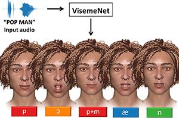</a></td>
              <td class="ptd" height="225" valign="middle" align="right">
                <div align="justify">
                  <p><span><strong>VisemeNet: Audio-Driven Animator-Centric
                        Speech Animation</strong><br>
                      </span><i>[</i><span><i><a href="https://kalo-ai.github.io/papers/visemenet/visemenet.pdf">PAPER</a>][<a

                            href="https://youtu.be/kk2EnyMD3mo">VIDEO</a>][<a href="https://people.umass.edu/%7Eyangzhou/visemenet/">PAGE
                            WITH CODE &amp; DATA</a>]</i></span><span><br>
                      </span><span><em><span class="student-color">Yang Zhou</span>, <span class="student-color">Zhan Xu</span>, Chris Landreth, Evangelos Kalogerakis, Subhransu Maji, Karan Singh</em><br>
                      </span><i>ACM Transactions on Graphics, Vol. 37, No. 4,
                        2018<br>
                        (also in the Proceedings of ACM SIGGRAPH 2018<span>)</span></i><i><span><br>
                        </span></i><span class="styleAbstract"><br>
                        <em>Abstract: </em>We present a novel
                      deep-learning based approach to producing animator-centric
                      speech motion curves that drive a JALI or standard
                      FACS-based production face-rig, directly from input audio.
                      Our three-stage Long Short-Term Memory (LSTM) network
                      architecture is motivated by psycho-linguistic insights:
                      segmenting speech audio into a stream of phonetic-groups
                      is sufficient for viseme construction; speech styles like
                      mumbling or shouting are ly co-related to the motion
                      of facial landmarks; and animator style is encoded in
                      viseme motion curve profiles. Our contribution is an
                      automatic real-time lip-synchronization from audio
                      solution that integrates seamlessly into existing
                      animation pipelines. We evaluate our results by:
                      cross-validation to ground-truth data; animator critique
                      and edits; visual comparison to recent deep-learning
                      lip-synchronization solutions; and showing our approach to
                      be resilient to diversity in speaker and language.<br>
                    </span> </p>
                </div>
              </td>
            </tr>
            <tr valign="middle">
              <td class="ptd" width="270" valign="middle"><a href="papers/local_mvcnn/index.html">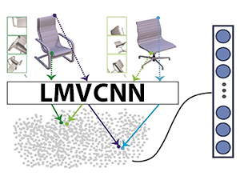</a></td>
              <td class="ptd" height="225" valign="middle" align="right">
                <div align="justify">
                  <p><span><strong>Learning Local Shape Descriptors from Part
                        Correspondences With Multi-view Convolutional Networks</strong><br>
                      </span><i>[<a href="papers/local_mvcnn/local_mvcnn.pdf">PAPER</a>][<a

                          href="papers/local_mvcnn/index.html">PAGE WITH CODE
                          &amp; DATA</a>]</i><span><br>
                      </span><span><em><span class="student-color">Haibin Huang</span>, Evangelos Kalogerakis,
                          Siddhartha Chaudhuri, Duygu Ceylan, Vladimir Kim,
                          Ersin Yumer </em><br>
                      </span><i>ACM Transactions on Graphics, Vol. 37, No. 1,
                        2018<br>
                        (also in SIGGRAPH 2018) </i><i><span><br>
                        </span></i><span class="styleAbstract"><br>
                        <em>Abstract: </em>We present a new local
                      descriptor for 3D shapes, directly applicable to a wide
                      range of shape analysis problems such as point
                      correspondences, semantic segmentation, affordance
                      prediction, and shape-to-scan matching. The descriptor is
                      produced by a convolutional network that is trained to
                      embed geometrically and semantically similar points close
                      to one another in descriptor space. The network processes
                      surface neighborhoods around points on a shape that are
                      captured at multiple scales by a succession of
                      progressively zoomed out views, taken from carefully
                      selected camera positions. We leverage two extremely large
                      sources of data to train our network. First, since our
                      network processes rendered views in the form of 2D images,
                      we repurpose architectures pre-trained on massive image
                      datasets. Second, we automatically generate a synthetic
                      dense point correspondence dataset by non-rigid alignment
                      of corresponding shape parts in a large collection of
                      segmented 3D models. As a result of these design choices,
                      our network effectively encodes multi-scale local context
                      and fine-grained surface detail. Our network can be
                      trained to produce either category-specific descriptors or
                      more generic descriptors by learning from multiple shape
                      categories. Once trained, at test time, the network
                      extracts local descriptors for shapes without requiring
                      any part segmentation as input. Our method can produce
                      effective local descriptors even for shapes whose category
                      is unknown or different from the ones used while training.
                      We demonstrate through several experiments that our
                      learned local descriptors are more discriminative compared
                      to state of the art alternatives, and are effective in a
                      variety of shape analysis applications.<br>
                    </span> </p>
                </div>
              </td>
            </tr>
            <tr valign="middle">
              <td class="ptd" width="270" valign="middle"><a href="https://vis-www.cs.umass.edu/splatnet/">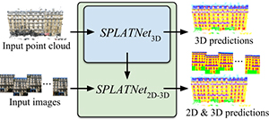</a></td>
              <td class="ptd" height="225" valign="middle" align="right">
                <div align="justify">
                  <p><span><strong>SPLATNet: Sparse Lattice Networks for Point
                        Cloud Processing</strong><br>
                      </span><i>[<a href="papers/SplatNet/SPLATNet.pdf">PAPER</a>][<a

                          href="https://vis-www.cs.umass.edu/splatnet/">PAGE WITH
                          CODE &amp; DATA</a>]</i><span><br>
                      </span><span><em>Hang Su, Varun Jampani, Deqing Sun,
                          Subhransu Maji, Evangelos Kalogerakis, Ming-Hsuan
                          Yang, Jan Kautz</em><br>
                      </span><i>Proceedings of the Computer Vision and Pattern
                        Recognition (CVPR) 2018</i> <i><span class="importantnote">(Oral
                          Presentation + <strong>Best paper honorable mention award</strong>)</span></i><i><span><br>
                        </span></i><span class="styleAbstract"><br>
                        <em>Abstract: </em>We present a network
                      architecture for processing point clouds that directly
                      operates on the collection of points represented as a
                      sparse set of samples in a high-dimensional lattice.
                      Naively applying convolutions on this lattice scales
                      poorly both in terms of memory and computational cost as
                      the size of the lattice increases. Instead, our network
                      uses sparse bilateral convolutional layers as building
                      blocks. These layers maintain efficiency by using indexing
                      structures to apply convolutions only on occupied parts of
                      the lattice, and allow flexible specification of the
                      lattice structure enabling hierarchical and
                      spatially-aware feature learning, as well as joint 2D-3D
                      reasoning. Both point-based and image-based
                      representations can be easily incorporated in a network
                      with such layers and the resulting model can be trained in
                      an end-to-end manner. We present results on 3D
                      segmentation tasks where our approach outperforms existing
                      state-of-the-art techniques. <br>
                    </span> </p>
                </div>
              </td>
            </tr>
			  
            <tr valign="middle">
              <td class="ptd" width="270" valign="middle"><a href="https://github.com/Hippogriff/CSGNet">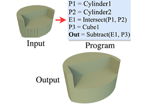</a></td>
              <td class="ptd" height="225" valign="middle" align="right">
                <div align="justify">
                  <p><span><strong>Neural Shape Parsers for Constructive Solid
                        Geometry</strong><br>
                      </span><i>[<a href="papers/CSGNet/CSGNet_PAMI.pdf">JOURNAL
                          PAPER - TPAMI</a>]&nbsp; </i><i>[<a

                              href="papers/CSGNet/CSGNet.pdf">CONFERENCE
                              PAPER - CVPR</a>] [<a href="https://github.com/Hippogriff/CSGNet">PAGE
                          WITH CODE &amp; DATA</a>]</i><span><br>
                      </span><span><em><span class="student-color">Gopal Sharma</span>, Rishabh Goyal, <span class="student-color">Difan Liu</span>,<strong> Evangelos Kalogerakis</strong>, Subhransu Maji</em><br>
					  <i>Proceedings of the Computer Vision and Pattern
                        Recognition (CVPR) 2018<br>
					  (an extended version also appeared at the IEEE Transactions on Pattern Analysis and Machine
					  Intelligence (TPAMI) 2022, vol. 44, no. 5) 
					  </i></span><br>					  
					  <span><br></span>
					  <span class="styleAbstract"><br>
                        <em>Abstract: </em>Constructive Solid Geometry
                      (CSG) is a geometric modeling technique that defines
                      complex shapes by recursively applying boolean operations
                      on primitives such as spheres and cylinders. We present
                      CSGNET, a deep network architecture that takes as input a
                      2D or 3D shape and outputs a CSG program that models it.
                      Parsing shapes into CSG programs is desirable as it yields
                      a compact and interpretable generative model. However, the
                      task is challenging since the space of primitives and
                      their combinations can be prohibitively large. CSGNET uses
                      a convolutional encoder and recurrent decoder based on
                      deep networks to map shapes to modeling instructions in a
                      feed-forward manner and is significantly faster than
                      bottom-up approaches. We investigate two architectures for
                      this task - a vanilla encoder (CNN) - decoder (RNN) and
                      another architecture that augments the encoder with an
                      explicit memory module based on the program execution
                      stack. The stack augmentation improves the reconstruction
                      quality of the generated shape and learning efficiency.
                      Our approach is also more effective as a shape primitive
                      detector compared to a state-of-the-art object detector.
                      Finally, we demonstrate CSGNET can be trained on novel
                      datasets without program annotations through policy
                      gradient techniques.<br>
                    </span> </p>
                </div>
              </td>
            </tr>

			  
            <tr valign="middle">
              <td class="ptd" width="270" valign="middle"><a href="papers/more/mattrans3dv.pdf"></a></td>
              <td class="ptd" height="225" valign="middle" align="right">
                <div align="justify">
                  <p><strong>Learning Material-Aware Local Descriptors for 3D
                      Shapes</strong><br>
                      <em>[<a href="papers/more/mattrans3dv.pdf">PAPER</a>]</em><br>
                      <span><em>Hubert Lin, Melinos Averkiou, Evangelos Kalogerakis, Balazs Kovacs, Siddhant Ranade, Vladimir
                          Kim, Siddhartha Chaudhuri, Kavita Bala</em><br>
                      </span><i>Proceedings of the
                        International Conference on 3D Vision (3DV) 2018<span><br>
                        </span></i><span class="styleAbstract"><br>
                        <em>Abstract: </em>Material understanding is
                      critical for design, geometric modeling, and analysis of
                      functional objects. We enable material-aware 3D shape
                      analysis by employing a projective convolutional neural
                      network architecture to learn material-aware descriptors
                      from view-based representations of 3D points for
                      point-wise material classification or material-aware
                      retrieval. Unfortunately, only a small fraction of shapes
                      in 3D repositories are labeled with physical materials,
                      posing a challenge for learning methods. To address this
                      challenge, we crowdsource a dataset of 3080 3D shapes with
                      part-wise material labels. We focus on furniture models
                      which exhibit interesting structure and material
                      variability. In addition, we also contribute a
                      high-quality expert-labeled benchmark of 115 shapes from
                      Herman-Miller and IKEA for evaluation. We further apply a
                      mesh-aware conditional random field, which incorporates
                      rotational and reflective symmetries, to smooth our local
                      material predictions across neighboring surface patches.
                      We demonstrate the effectiveness of our learned
                      descriptors for automatic texturing, material-aware part
                      retrieval, and physical simulation.<br>
                    </span> </p>
                </div>
              </td>
            </tr>
            <tr valign="middle">
              <td class="ptd" width="270" valign="middle"><a href="https://i.cs.hku.hk/%7Exghan/Projects/shapecomp.htm">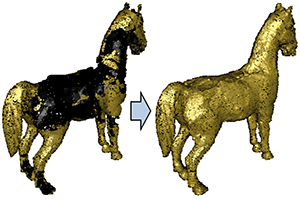</a></td>
              <td class="ptd" height="225" valign="middle" align="right">
                <div align="justify">
                  <p><strong>High Resolution Shape Completion Using Deep Neural
                      Networks for Global Structure and Local Geometry Inference</strong><br>
                    <i>[<a href="papers/ShapePatchNet/shape_patchnet_iccv.pdf">PAPER</a>][<a

                          href="https://i.cs.hku.hk/%7Exghan/Projects/shapecomp.htm">PAGE</a>]</i><span><br>
                      </span><i><span>Xiaoguang Han*, Zhen Li*, <span class="student-color">Haibin Huang</span>,
                          Evangelos Kalogerakis, Yizhou Yu<br>
                        </span></i><em>(* indicates equal contribution) </em><i><span><br>
                        </span>Proceedings of the International Conference on
                        Computer Vision (ICCV) 2017 </i> <i><span

                          class="importantnote">(Selected for Spotlight Presentation)</span></i><i><span><br>
                        </span></i><span class="styleAbstract"><br>
                        <em>Abstract: </em>We propose a data-driven
                      method for recovering missing parts of 3D shapes. Our
                      method is based on a new deep learning architecture
                      consisting of two sub-networks: a global structure
                      inference network and a local geometry refinement network.
                      The global structure inference network incorporates a long
                      short-term memorized context fusion module (LSTM-CF) that
                      infers the global structure of the shape based on
                      multi-view depth information provided as part of the
                      input. It also includes a 3D fully convolutional (3DFCN)
                      module that further enriches the global structure
                      representation according to volumetric information in the
                      input. Under the guidance of the global structure network,
                      the local geometry refinement network takes as input local
                      3D patches around missing regions, and progressively
                      produces a high-resolution, complete surface through a
                      volumetric encoder-decoder architecture. Our method
                      jointly trains the global structure inference and local
                      geometry refinement networks in an end-to-end manner. We
                      perform qualitative and quantitative evaluations on six
                      object categories, demonstrating that our method
                      outperforms existing state-of-the-art work on shape
                      completion.<br>
                    </span> </p>
                </div>
              </td>
            </tr>
            <tr valign="middle">
              <td class="ptd" width="270" valign="middle"><a href="https://kalo-ai.github.io/papers/SketchModeling/">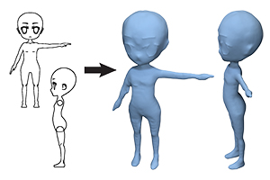</a></td>
              <td class="ptd" height="225" valign="middle" align="right">
                <div align="justify">
                  <p><span><strong>3D Shape Reconstruction from Sketches via
                        Multi-view Convolutional Networks</strong><br>
                      </span><i>[<a href="papers/SketchModeling/sketch_modeling.pdf">PAPER</a>][<a

                          href="https://kalo-ai.github.io/papers/SketchModeling/">PAGE
                          WITH CODE &amp; DATA</a>]</i><span><br>
                      </span><i><span class="student-color">Zhaoliang Lun</span>, Matheus Gadelha, Evangelos Kalogerakis, Subhransu Maji, Rui Wang<br>
Proceedings of the International Conference on 3D
                        Vision (3DV) 2017</i> <i><span

                          class="importantnote">(Selected for Oral Presentation)</span></i><i><span><br>
                        </span></i><span class="styleAbstract"><br>
                        <em>Abstract: </em>We propose a method for
                      reconstructing 3D shapes from 2D sketches in the form of
                      line drawings. Our method takes as input a single sketch,
                      or multiple sketches, and outputs a dense point cloud
                      representing a 3D reconstruction of the input sketch(es).
                      The point cloud is then converted into a polygon mesh. At
                      the heart of our method lies a deep, encoder-decoder
                      network. The encoder converts the sketch into a compact
                      representation encoding shape information. The decoder
                      converts this representation into depth and normal maps
                      capturing the underlying surface from several output
                      viewpoints. The multi-view maps are then consolidated into
                      a 3D point cloud by solving an optimization problem that
                      fuses depth and normals across all viewpoints. Based on
                      our experiments, compared to other methods, such as
                      volumetric networks, our architecture offers several
                      advantages, including more faithful reconstruction, higher
                      output surface resolution, better preservation of topology
                      and shape structure.<br>
                    </span> </p>
                </div>
              </td>
            </tr>
            <tr valign="middle">
              <td class="ptd" width="270" valign="middle"><a href="https://kalo-ai.github.io/papers/PatternGrouping/">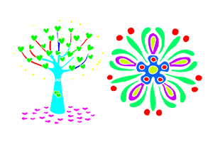</a></td>
              <td class="ptd" height="225" valign="middle" align="right">
                <div align="justify">
                  <p><strong>Learning to Group Discrete Graphical Patterns<br>
                  </strong> <em>[<a href="papers/PatternGrouping/PatternGrouping.pdf">PAPER</a>][<a href="https://kalo-ai.github.io/papers/PatternGrouping/">PAGE</a>]</em><span><br>
                      </span><em><span class="student-color">Zhaoliang Lun</span>*, Changqing Zou*, <span class="student-color">Haibin Huang</span>, Evangelos Kalogerakis, Ping Tan, Marie-Paule Cani, Hao
                        Zhang </em><span><br>
                      </span><em>(* indicates equal contribution) </em><span><br>
                      </span><i>ACM Transactions on Graphics<span>, </span>Vol.
                        36, No. 6, 2017<span><br>
                        </span>(also in the Proceedings of ACM SIGGRAPH ASIA
                        2017<span>)<br>
                        </span></i><span class="styleAbstract"><br>
                        <em>Abstract: </em>We introduce a deep
                      learning approach for grouping discrete patterns common in
                      graphical designs. Our approach is based on a
                      convolutional neural network architecture that learns a
                      grouping measure defined over a pair of pattern elements.
                      Motivated by perceptual grouping principles, the key
                      feature of our network is the encoding of element shape,
                      context, symmetries, and structural arrangements. These
                      element properties are all jointly considered and
                      appropriately weighted in our grouping measure. To better
                      align our measure with the human perception of grouping,
                      we train our network on a large, human-annotated dataset
                      of pattern groupings consisting of patterns at varying
                      granularity levels, with rich element relations and
                      varieties, tempered with noise and other data
                      imperfections. Our results demonstrate that our
                      deep-learned measure leads to robust pattern groupings.<br>
                    </span> </p>
                </div>
              </td>
            </tr>
            <tr valign="middle">
              <td class="ptd" width="270" valign="middle"><a href="papers/shapepfcn/index.html">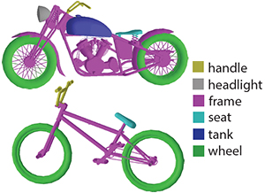</a></td>
              <td class="ptd" height="225" valign="middle" align="right">
                <div align="justify">
                  <p><span><strong>3D Shape Segmentation with Projective
                        Convolutional Networks</strong><br>
                      </span><i>[<a href="papers/shapepfcn/ShapePFCN.pdf">PAPER</a>][<a

                          href="papers/shapepfcn/index.html">PAGE WITH CODE
                          &amp; DATA</a>]</i><span><br>
                        <em>Evangelos Kalogerakis, Melinos Averkiou, Subhransu
                          Maji, </em></span><em>Siddhartha Chaudhuri</em><i><span><br>
                        </span>Proceedings of the Computer Vision and Pattern
                        Recognition (CVPR) 2017<span> </span></i> <i><span

                          class="importantnote">(Selected for&nbsp; Oral Presentation)</span></i><i><span><br>
                        </span></i><span class="styleAbstract"><br>
                        <em>Abstract: </em>This paper introduces a
                      deep architecture for segmenting 3D objects into their
                      labeled semantic parts. Our architecture combines
                      image-based Fully Convolutional Networks (FCNs) and
                      surface-based Conditional Random Fields (CRFs) to yield
                      coherent segmentations of 3D shapes. The image-based FCNs
                      are used for efficient view-based reasoning about 3D
                      object parts. Through a special projection layer, FCN
                      outputs are effectively aggregated across multiple views
                      and scales, then are projected onto the 3D object
                      surfaces. Finally, a surface-based CRF combines the
                      projected outputs with geometric consistency cues to yield
                      coherent segmentations. The whole architecture (multi-view
                      FCNs and CRF) is trained end-to-end. Our approach
                      significantly outperforms the existing state-of-the-art
                      methods in the currently largest segmentation benchmark
                      (ShapeNet). Finally, we demonstrate promising segmentation
                      results on noisy 3D shapes acquired from consumer-grade
                      depth cameras.<br>
                    </span> </p>
                </div>
              </td>
            </tr>
            <tr valign="middle">
              <td class="ptd" height="225" width="270" valign="middle"><a href="papers/srpm/index.html"></a></td>
              <td class="ptd" height="225" valign="middle" align="right">
                <div align="justify">
                  <p><span><strong>Shape Synthesis from Sketches via Procedural
                        Models and Convolutional Networks</strong><br>
                      </span><i>[<a href="papers/srpm/shapepmconvnet.pdf">PAPER</a>][<a

                          href="papers/srpm/index.html">PAGE WITH CODE &amp;
                          DATA</a>]</i><span><br>
                      </span><i><span><span class="student-color">Haibin Huang</span>, Evangelos Kalogerakis, Ersin
                          Yumer, Radomir Mech<br>
                        </span>IEEE Transactions on Visualization and Computer
                        Graphics, Vol. 23, No. 8, 2017<span><br>
                        </span>(also in Pacific Graphics 2016) <span>
                          <br>
                        </span></i><span class="styleAbstract"><br>
                        <em>Abstract: </em>Procedural modeling
                      techniques can produce high quality visual content through
                      complex rule sets. However, controlling the outputs of
                      these techniques for design purposes is often notoriously
                      difficult for users due to the large number of parameters
                      involved in these rule sets and also their non-linear
                      relationship to the resulting content. To circumvent this
                      problem, we present a sketch-based approach to procedural
                      modeling. Given an approximate and abstract hand-drawn 2D
                      sketch provided by a user, our algorithm automatically
                      computes a set of procedural model parameters, which in
                      turn yield multiple, detailed output shapes that resemble
                      the user's input sketch. The user can then select an
                      output shape, or further modify the sketch to explore
                      alternative ones. At the heart of our approach is a deep
                      Convolutional Neural Network (CNN) that is trained to map
                      sketches to procedural model parameters. The network is
                      trained by large amounts of automatically generated
                      synthetic line drawings. By using an intuitive medium
                      i.e., freehand sketching as input, users are set free from
                      manually adjusting procedural model parameters, yet they
                      are still able to create high quality content. We
                      demonstrate the accuracy and efficacy of our method in a
                      variety of procedural modeling scenarios including design
                      of man-made and organic shapes.<br>
                    </span> </p>
                </div>
              </td>
            </tr>
            <tr valign="middle">
              <td class="ptd" height="225" width="270" valign="middle"><a href="papers/EGstar16/data_driven_shape.pdf">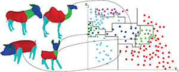</a></td>
              <td class="ptd" height="225" valign="middle" align="right">
                <div align="justify">
                  <p><span><strong>Data-Driven Shape Analysis and Processing</strong><br>
                      </span><i>[<a href="papers/EGstar16/data_driven_shape.pdf">PAPER</a>]</i><span><i>[<a

                            href="datadrivenshape/index.html">PAGE WITH CODE
                            &amp; DATA</a>]</i><br>
                      </span><i><span>Kai Xu, Vladimir Kim, Qixing Huang, Evangelos Kalogerakis<br>
Computer Graphics Forum</span><span>, </span>Vol. 36,
                        No. 1, 2017<span><br>
                        </span>(also in Eurographics 2016) <span> <br>
                        </span></i><span class="styleAbstract"><br>
                        <em>Abstract: </em>Data-driven methods play an
                      increasingly important role in discovering geometric,
                      structural, and semantic relationships between 3D shapes
                      in collections, and applying this analysis to support
                      intelligent modeling, editing, and visualization of
                      geometric data. In contrast to traditional approaches, a
                      key feature of data-driven approaches is that they
                      aggregate information from a collection of shapes to
                      improve the analysis and processing of individual shapes.
                      In addition, they are able to learn models that reason
                      about properties and relationships of shapes without
                      relying on hard-coded rules or explicitly programmed
                      instructions. We provide an overview of the main concepts
                      and components of these techniques, and discuss their
                      application to shape classification, segmentation,
                      matching, reconstruction, modeling and exploration, as
                      well as scene analysis and synthesis, through reviewing
                      the literature and relating the existing works with both
                      qualitative and numerical comparisons. We conclude our
                      report with ideas that can inspire future research in
                      data-driven shape analysis and processing.<br>
                    </span> </p>
                </div>
              </td>
            </tr>
            <tr valign="middle">
              <td class="ptd" height="225" width="270" valign="middle"><a href="https://kalo-ai.github.io/papers/StyleTransfer/">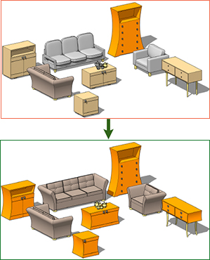</a></td>
              <td class="ptd" height="225" valign="middle" align="right">
                <div align="justify">
                  <p><b>Functionality Preserving Shape Style Transfer<br>
                  </b> <i>[</i><span><i><a href="https://kalo-ai.github.io/papers/StyleTransfer/StyleTransfer.pdf">PAPER</a>][<a

                            href="https://youtu.be/R-1jhH4sbRk?list=PL1U-zmoZcBllPJ8yG4vDGc_Cjvshero22">VIDEO</a>][<a

                            href="https://kalo-ai.github.io/papers/StyleTransfer/">PAGE
                            WITH CODE &amp; DATA</a>]</i><br>
                      </span><i><span><span class="student-color">Zhaoliang Lun</span>, Evangelos Kalogerakis, Rui
                          Wang, Alla Sheffer<br>
                        </span>ACM Transactions on Graphics<span>, </span>Vol.
                        35, No. 6, 2016<span><br>
                        </span>(also in the Proceedings of ACM SIGGRAPH ASIA
                        2016<span>)</span><span> <br>
                        </span></i><span class="styleAbstract"><br>
                        <em>Abstract: </em> When geometric models with
                      a desired combination of style and functionality are not
                      available, they currently need to be created manually. We
                      facilitate algorithmic synthesis of 3D models of man-made
                      shapes which combines user-specified style, described via
                      an exemplar shape, and functionality, encoded by a
                      functionally different target shape. Our method
                      automatically transfers the style of the exemplar to the
                      target, creating the desired combination. The main
                      challenge in performing cross-functional style transfer is
                      to implicitly separate an object's style from its
                      function: while stylistically the output shapes should be
                      as close as possible to the exemplar, their original
                      functionality and structure, as encoded by the target,
                      should be strictly preserved. Recent literature point to
                      the presence of similarly shaped, salient geometric
                      elements as a main indicator of stylistic similarity
                      between 3D shapes. We therefore transfer the exemplar
                      style to the target via a sequence of element-level
                      operations. We allow only compatible operations, ones that
                      do not affect the target functionality. To this end, we
                      introduce a cross-structural element compatibility metric
                      that estimates the impact of each operation on the edited
                      shape. Our metric is based on the global context and
                      coarse geometry of evaluated elements, and is trained on
                      databases of 3D objects. We use this metric to cast style
                      transfer as a tabu search, which incrementally updates the
                      target shape using compatible operations, progressively
                      increasing its style similarity to the exemplar while
                      strictly maintaining its functionality at each step. We
                      evaluate our framework across a range of man-made objects
                      including furniture, light fixtures, and tableware, and
                      perform a number of user studies confirming that it
                      produces convincing outputs combining the desired style
                      and function.<br>
                    </span> </p>
                </div>
              </td>
            </tr>
            <tr valign="middle">
              <td class="ptd" height="225" width="270" valign="middle"><a href="papers/directshapeoptimization/index.html">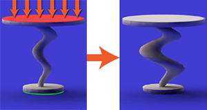</a></td>
              <td class="ptd" height="225" valign="middle" align="right">
                <div align="justify">
                  <p><span><strong>Direct shape optimization for strengthening
                        3D printable objects</strong><br>
                      </span><i>[<a href="papers/directshapeoptimization/directshapeoptimization.pdf">PAPER</a>][<a

                          href="https://youtu.be/N92MLHiqEFU?list=PL1U-zmoZcBllPJ8yG4vDGc_Cjvshero22">VIDEO</a>][<a

                          href="papers/directshapeoptimization/index.html">PAGE
                          WITH CODE &amp; DATA</a>]</i><span><br>
                      </span><i><span>Yahan Zhou, Evangelos Kalogerakis, Rui
                          Wang, Ian R. Grosse<br>
                        </span>Computer Graphics Forum, Vol. 35, No. 7, 2016<span><br>
                          (also in Pacific Graphics 2016) <br>
                        </span></i><span class="styleAbstract"><br>
                        <em>Abstract: </em> Recently there has been an
                      increasing demand for software that can help designers
                      create functional 3D objects with required physical
                      strength. We introduce a generic and extensible method
                      that directly optimizes a shape subject to physical and
                      geometric constraints. Given an input shape, our method
                      optimizes directly its input mesh representation until it
                      can withstand specified external forces, while remaining
                      similar to the original shape. Our method performs physics
                      simulation and shape optimization together in a unified
                      framework, where the physics simulator is an integral part
                      of the optimizer. We employ geometric constraints to
                      preserve surface details and shape symmetry, and adapt a
                      second-order method with analytic gradients to improve
                      convergence and computation time. Our method provides
                      several advantages over previous work, including the
                      ability to handle general shape deformations, preservation
                      of surface details, and incorporation of user-defined
                      constraints. We demonstrate the effectiveness of our
                      method on a variety of printable 3D objects through
                      detailed simulations as well as physical validations.<br>
                    </span> </p>
                </div>
              </td>
            </tr>
            <tr valign="middle">
              <td class="ptd" height="225" width="270" valign="middle"><a href="https://vis-www.cs.umass.edu/mvcnn/">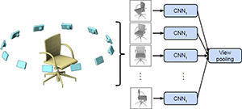</a></td>
              <td class="ptd" height="225" valign="middle" align="right">
                <div align="justify">
                  <p><span><strong>Multi-view Convolutional Neural Networks for
                        3D Shape Recognition</strong><br>
                      </span><i>[<a href="papers/viewbasedcnn/su15mvcnn.pdf">PAPER</a>][<a

                          href="https://youtu.be/QQbOy6J2PI0?list=PL1U-zmoZcBllPJ8yG4vDGc_Cjvshero22">VIDEO</a>][<a

                          href="https://vis-www.cs.umass.edu/mvcnn/">PAGE WITH
                          CODE &amp; DATA</a>]</i><span><br>
                      </span><i><span>Hang Su, Subhransu Maji, Evangelos Kalogerakis, Erik Learned-Miller<br>
                        </span>Proceedings of the International Conference on
                        Computer Vision (ICCV) 2015<span><br>
                          <span class="importantnote">Winner of the SHREC 2016
                            Large-Scale 3D Shape Retrieval Competition (normal
                            dataset)</span> </span>[<a href="https://shapenet.cs.stanford.edu/shrec16/shrec16shapenet.pdf">SHREC
                          2016 PAPER</a>]<span><br>
                        </span></i><span class="styleAbstract"><br>
                        <em>Abstract: </em>A longstanding question in
                      computer vision concerns the representation of 3D shapes
                      for recognition: should 3D shapes be represented with
                      descriptors operating on their native 3D formats, such as
                      voxel grid or polygon mesh, or can they be effectively
                      represented with view-based descriptors? We address this
                      question in the context of learning to recognize 3D shapes
                      from a collection of their rendered views on 2D images. We
                      first present a standard CNN architecture trained to
                      recognize the shapes� rendered views independently of each
                      other, and show that a 3D shape can be recognized even
                      from a single view at an accuracy far higher than using
                      state-of-the-art 3D shape descriptors. Recognition rates
                      further increase when multiple views of the shapes are
                      provided. In addition, we present a novel CNN architecture
                      that combines information from multiple views of a 3D
                      shape into a single and compact shape descriptor offering
                      even better recognition performance. The same architecture
                      can be applied to accurately recognize human hand-drawn
                      sketches of shapes. We conclude that a collection of 2D
                      views can be highly informative for 3D shape recognition
                      and is amenable to emerging CNN architectures and their
                      derivatives.<br>
                    </span> </p>
                </div>
              </td>
            </tr>
            <tr valign="middle">
              <td class="ptd" height="225" width="270" valign="middle"><a href="https://kalo-ai.github.io/papers/StyleSimilarity/">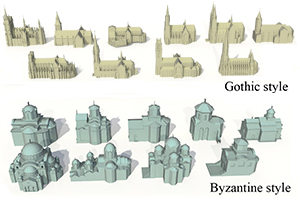</a></td>
              <td class="ptd" height="225" valign="middle" align="right">
                <div align="justify">
                  <p><span><strong>Elements of Style: Learning Perceptual Shape
                        Style Similarity</strong></span><span> <br>
                      </span><i>[<a href="papers/StyleSimilarity/StyleSimilarity.pdf">PAPER</a>][<a

                          href="https://youtu.be/PWqZwpHQtnE?list=PL1U-zmoZcBllPJ8yG4vDGc_Cjvshero22">VIDEO</a>][<a

                          href="https://kalo-ai.github.io/papers/StyleSimilarity/">PAGE
                          WITH CODE &amp; DATA</a>]</i><span><br>
                      </span><i><span><span class="student-color">Zhaoliang Lun</span>, Evangelos Kalogerakis, Alla
                          Sheffer<br>
ACM Transactions on Graphics, Vol. 34, No. 4</span>,
                        2015<br>
                        (also in the Proceedings of ACM SIGGRAPH 2015<span>)<br>
                        </span></i><span class="styleAbstract"><br>
                        <em>Abstract: </em>The human perception of
                      stylistic similarity transcends structure and function:
                      for instance, a bed and a dresser may share a common
                      style. An algorithmically computed style similarity
                      measure that mimics human perception can benefit a range
                      of computer graphics applications. Previous work in style
                      analysis focused on shapes within the same class, and
                      leveraged structural similarity between these shapes to
                      facilitate analysis. In contrast, we introduce the first
                      structure-transcending style similarity measure and
                      validate it to be well aligned with human perception of
                      stylistic similarity. Our measure is inspired by
                      observations about style similarity in art history
                      literature, which point to the presence of similarly
                      shaped, salient, geometric elements as one of the key
                      indicators of stylistic similarity. We translate these
                      observations into an algorithmic measure by first
                      quantifying the geometric properties that make humans
                      perceive geometric elements as similarly shaped and
                      salient in the context of style, then employing this
                      quantification to detect pairs of matching style related
                      elements on the analyzed models, and finally collating the
                      element-level geometric similarity measurements into an
                      object-level style measure consistent with human
                      perception. To achieve this consistency we employ
                      crowdsourcing to quantify the different components of our
                      measure; we learn the relative perceptual importance of a
                      range of elementary shape distances and other parameters
                      used in our measurement from 50K responses to
                      cross-structure style similarity queries provided by over
                      2500 participants. We train and validate our method on
                      this dataset, showing it to successfully predict relative
                      style similarity with near 90% accuracy based on 10-fold
                      cross-validation.<br>
                    </span> </p>
                </div>
              </td>
            </tr>
            <tr valign="middle">
              <td class="ptd" height="225" width="270" valign="middle"><a href="papers/bsm/index.html">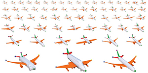</a></td>
              <td class="ptd" height="225" valign="middle" align="right">
                <div align="justify">
                  <p><span><strong>Analysis and synthesis of 3D shape families
                        via deep-learned generative models of surfaces</strong><br>
                      </span><i>[<a href="papers/bsm/bsm_optimized.pdf">PAPER</a>][<a

                          href="papers/bsm/index.html">PAGE WITH CODE &amp; DATA</a>]</i><span><br>
                      </span><i><span><span class="student-color">Haibin Huang</span>, Evangelos Kalogerakis,
                          Benjamin Marlin<br>
Computer Graphics Forum, Vol. 34, No. 5</span>, 2015<br>
                        (also in the Proceedings of SGP 2015<span>)<br>
                        </span></i><span class="styleAbstract"><br>
                        <em>Abstract: </em>We present a method for
                      joint analysis and synthesis of geometrically diverse 3D
                      shape families. Our method first learns part-based
                      templates such that an optimal set of fuzzy point and part
                      correspondences is computed between the shapes of an input
                      collection based on a probabilistic deformation model. In
                      contrast to previous template-based approaches, the
                      geometry and deformation parameters of our part-based
                      templates are learned from scratch. Based on the estimated
                      shape correspondence, our method also learns a
                      probabilistic generative model that hierarchically
                      captures statistical relationships of corresponding
                      surface point positions and parts as well as their
                      existence in the input shapes. A deep learning procedure
                      is used to capture these hierarchical relationships. The
                      resulting generative model is used to produce control
                      point arrangements that drive shape synthesis by combining
                      and deforming parts from the input collection. The
                      generative model also yields compact shape descriptors
                      that are used to perform fine-grained classification.
                      Finally, it can be also coupled with the probabilistic
                      deformation model to further improve shape correspondence.
                      We provide qualitative and quantitative evaluations of our
                      method for shape correspondence, segmentation,
                      fine-grained classification and synthesis. Our experiments
                      demonstrate superior correspondence and segmentation
                      results than previous state-of-the-art approaches.<br>
                    </span> </p>
                </div>
              </td>
            </tr>
            <tr valign="middle">
              <td class="ptd" height="225" width="270" valign="middle"><a href="papers/risq/risq.pdf">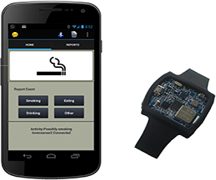</a></td>
              <td class="ptd" height="225" valign="middle">
                <div align="justify">
                  <p><span><strong>RisQ: Recognizing Smoking Gestures with
                        Inertial Sensors on a Wristband</strong></span><span>
                        <br>
                      </span><i>[<a href="papers/risq/risq.pdf">PAPER</a>]</i><span><br>
                      </span><i><span>Abhinav Parate, Meng-Chieh Chiu, Chaniel
                          Chadowitz, Deepak Ganesan, Evangelos Kalogerakis<br>
Proceedings of ACM MobiSys 2014</span><span> </span><span><br>
                  </span></i><span class="styleAbstract"><br>
                  <em>Abstract: </em>Smoking-induced diseases
                      are known to be the leading cause of death in the United
                      States. In this work, we design RisQ, a mobile solution
                      that leverages a wristband containing a 9-axis inertial
                      measurement unit to capture changes in the orientation of
                      a person�s arm, and a machine learning pipeline that
                      processes this data to accurately detect smoking gestures
                      and sessions in real-time. Our key innovations are
                      fourfold: a) an arm trajectory-based method that extracts
                      candidate hand-to-mouth gestures, b) a set of
                      trajectory-based features to distinguish smoking gestures
                      from confounding gestures including eating and drinking,
                      c) a probabilistic model that analyzes sequences of
                      hand-to-mouth gestures and infers which gestures are part
                      of individual smoking sessions, and d) a method that
                      leverages multiple IMUs placed on a person�s body together
                      with 3D animation of a person�s arm to reduce burden of
                      self-reports for labeled data collection. Our experiments
                      show that our gesture recognition algorithm can detect
                      smoking gestures with high accuracy (95.7%), precision
                      (91%) and recall (81%). We also report a user study that
                      demonstrates that we can accurately detect the number of
                      smoking sessions with very few false positives over the
                      period of a day, and that we can reliably extract the
                      beginning and end of smoking session periods.<br>
                  </span> </p>
                </div>
              </td>
            </tr>
            <tr valign="middle">
              <td class="ptd" height="225" width="270" valign="middle"><a href="https://www.cs.ubc.ca/%7Echyma/publications/st/">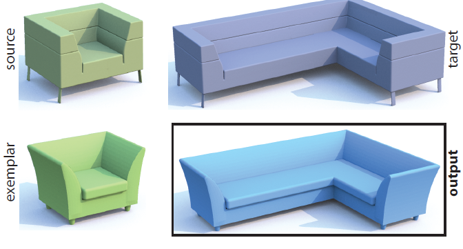</a></td>
              <td class="ptd" height="225" valign="middle">
                <div align="justify">
                  <p><span><strong>Analogy-Driven 3D Style Transfer </strong><br>
                      </span><i>[<a href="papers/ShapeSynthesis_Analogies/2014_st_preprint.pdf">PAPER</a>][<a

                          href="https://youtu.be/h0xF6R5MpyA?list=PL1U-zmoZcBllPJ8yG4vDGc_Cjvshero22">VIDEO</a>][<a

                          href="https://www.cs.ubc.ca/%7Echyma/publications/st/">PAGE</a>]</i><span><br>
                      </span><em>Chongyang Ma, <span class="student-color">Haibin Huang</span>, Alla Sheffer, Evangelos Kalogerakis, Rui Wang</em><span><br>
                      </span><i><span> Computer Graphics Forum, Vol. 33, No. 2,
                          2014<br>
                        </span>(also in the Proceedings of Eurographics 2014<span>)
                          <br>
                        </span></i><span class="styleAbstract"><br>
                        <em>Abstract: </em>Style transfer aims to
                      apply the style of an exemplar model to a target one,
                      while retaining the target�s structure. The main challenge
                      in this process is to algorithmically distinguish style
                      from structure, a high-level, potentially ill-posed
                      cognitive task. We recast style transfer in terms of shape
                      analogies. We use the proposed framework to seamlessly
                      transfer a variety of style properties between 2D and 3D
                      objects and demonstrate significant improvements over the
                      state of the art in style transfer. We further show that
                      our framework can be used to successfully complete partial
                      scans with the help of a user provided structural
                      template, coherently propagating scan style across the
                      completed surfaces.<br>
                    </span> </p>
                </div>
              </td>
            </tr>
            <tr valign="middle">
              <td class="ptd" height="225" width="270" valign="middle"><a href="papers/attribit/index.html">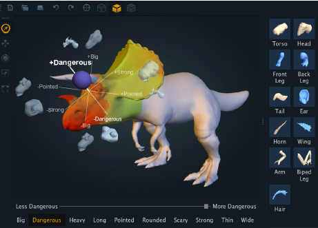</a></td>
              <td class="ptd" height="225" valign="middle">
                <div align="justify">
                  <p><strong>AttribIt: Content Creation with Semantic
                        Attributes</strong> <br>
                    <i>[<a href="papers/attribit/AttribIt.pdf">PAPER</a>][<a

                          href="https://youtu.be/U_XfYzy2c9w?list=PL1U-zmoZcBllPJ8yG4vDGc_Cjvshero22">VIDEO</a>][<a

                          href="papers/attribit/index.html">PAGE</a>]</i><span><br>
                      </span><em>Siddhartha Chaudhuri*, <span><strong>Evangelos
                          Kalogerakis*</strong></span><span>, Stephen Giguere, Thomas
                          Funkhouser</span></em><span><br>
                        (*S. Chaudhuri and E. Kalogerakis contributed equally to
                        this work)<br>
                      </span><i><span>Proceedings of the ACM UIST 2013
                          conference</span><span><br>
                        </span></i><span class="styleAbstract"><br>
                        <em>Abstract: </em>We present <em>ATTRIBIT</em>,
                      an approach for people to create visual content using
                      relative semantic attributes expressed in linguistic
                      terms. During an off-line processing step, <em>ATTRIBIT</em>
                      learns semantic attributes for design components that
                      reflect the high-level intent people may have for creating
                      content in a domain (e.g., adjectives such as �dangerous,�
                      �scary,� or ��) and ranks them according to the
                      strength of each learned attribute. Then, during an
                      interactive design session, a person can explore different
                      combinations of visual components using commands based on
                      relative attributes (e.g. �make this part more
                      dangerous�). Novel designs are assembled in real-time as
                      the strength of selected attributes are varied, enabling
                      rapid, in-situ exploration of candidate designs. We
                      applied this approach to 3D modeling and web design.
                      Experiments suggest this interface is an effective
                      alternative for novices performing tasks with high-level
                      design goals.<br>
                    </span> </p>
                </div>
              </td>
            </tr>
            <tr valign="middle">
              <td class="ptd" height="225" width="270" valign="middle"><a href="https://people.cs.umass.edu/%7Eyhzhou/Site/elastoplastic/index.htm">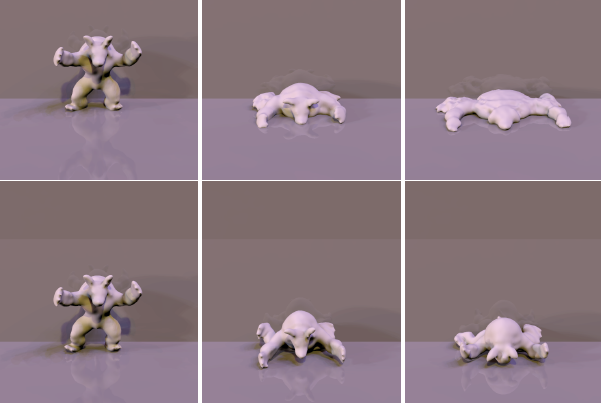</a></td>
              <td class="ptd" height="225" valign="middle">
                <div align="justify">
                  <p><span><strong>Implicit Integration for Particle-based
                        Simulation of Elasto-plastic Solids</strong></span>
                      <i><br>
                        [<a href="papers/elastoplastic_implicit_integration/elastoplastic.pdf">PAPER</a>][<a

                          href="https://youtu.be/7Ffm2eOKgE4?list=PL1U-zmoZcBllPJ8yG4vDGc_Cjvshero22">VIDEO</a>]</i><br>
                      <em>Yahan Zhou, <span class="student-color">Zhaoliang Lun</span>, Evangelos Kalogerakis, and
                      Rui Wang</em><span><br>
                      </span><i><span>Computer Graphics Forum, Vol. 32, </span>No.
                        7, 2013<span><br>
                        </span>(also in the Proceedings of Pacific Graphics 2013<span>)</span><span>
                          <br>
                        </span></i><span class="styleAbstract"><br>
                        <em>Abstract: </em>We present a novel
                      particle-based method for stable simulation of
                      elasto-plastic materials. The main contribution of our
                      method is an implicit numerical integrator, using a
                      physically-based model, for computing particles that
                      undergo both elastic and plastic deformations. The main
                      advantage of our implicit integrator is that it allows the
                      use of large time steps while still preserving stable and
                      physically plausible simulation results. As a key
                      component of our algorithm, at each time step we compute
                      the particle positions and velocities based on a sparse
                      linear system, which we solve efficiently on the graphics
                      hardware. Compared to existing techniques, our method
                      allows for a much wider range of stiffness and plasticity
                      settings. In addition, our method can significantly reduce
                      the computation cost for certain range of material types.
                      We demonstrate fast and stable simulations for a variety
                      of elasto-plastic materials, ranging from highly stiff
                      elastic materials to highly plastic ones.<br>
                    </span> </p>
                </div>
              </td>
            </tr>
            <tr valign="middle">
              <td class="ptd" height="225" width="270" valign="middle"><a href="papers/ShapeSynthesis/index.html">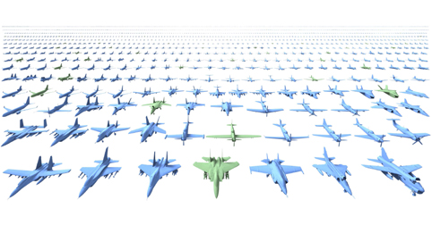</a></td>
              <td class="ptd" height="225" valign="middle">
                <div align="justify">
                  <p><span><strong>A Probabilistic Model for Component-Based
                        Shape Synthesis</strong></span><span> <br>
                      </span><i>[<a href="papers/ShapeSynthesis/ShapeSynthesis.pdf">PAPER</a>][<a

                          href="https://youtu.be/VcK2z6AOZcA?list=PL1U-zmoZcBllPJ8yG4vDGc_Cjvshero22">VIDEO</a>]</i><i>[<a

                          href="papers/ShapeSynthesis/index.html">PAGE WITH CODE
                          &amp; DATA</a>]</i><span><br>
                        <em>Evangelos Kalogerakis, Siddhartha Chaudhuri, Daphne
                          Koller, Vladlen Koltun</em><br>
                      </span><i><span> ACM Transactions on Graphics, Vol. 31,
                          No. 4, 2012<br>
                        </span></i><i><span>(also in the
                          Proceedings of SIGGRAPH 2012)  <br>
                      </span></i><span class="styleAbstract"><br>
                        <em>Abstract: </em><em>We present an approach
                        to synthesizing shapes from complex domains, by
                        identifying new plausible combinations of components
                        from existing shapes. Our primary contribution is a new
                        generative model of component-based shape structure. The
                        model represents probabilistic relationships between
                        properties of shape components, and relates them to
                        learned underlying causes of structural variability
                        within the domain. These causes are treated as latent
                        variables, leading to a compact representation that can
                        be effectively learned without supervision from a set of
                        compatibly segmented shapes. We evaluate the model on a
                        number of shape datasets with complex structural
                        variability and demonstrate its application to
                        amplification of shape databases and to interactive
                        shape synthesis.</em><br>
                    </span> </p>
                </div>
              </td>
            </tr>
            <tr valign="middle">
              <td class="ptd" height="225" width="270" valign="middle"><a href="papers/MLHatching/index.html">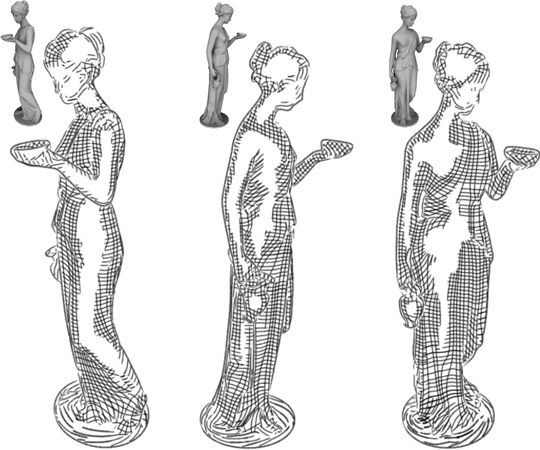</a></td>
              <td class="ptd" height="225" valign="middle">
                <div align="justify">
                  <p><span><strong>Learning Hatching for Pen-and-Ink
                        Illustration of Surfaces</strong></span><span> <br>
                      </span><i>[<a href="papers/MLHatching/MLHatching.pdf">PAPER</a>][<a

                          href="papers/MLHatching/index.html">PAGE</a>]</i><span><br>
                        <em>Evangelos Kalogerakis, Derek Nowrouzezahrai, Simon
                        Breslav, Aaron Hertzmann</em><br>
                      </span><i><span> ACM Transactions on Graphics, Vol. 31,
                          No. 1, 2012<br>
                          (also in SIGGRAPH 2012) </span></i><i><span><br>
                      </span></i><span class="styleAbstract"><em><br>
                          Abstract: </em><em>This paper presents an
                        algorithm for learning hatching styles from line
                        drawings. An artist draws a single hatching illustration
                        of a 3D object. Their strokes are analyzed to extract
                        the following per-pixel properties: hatching level
                        (hatching, cross-hatching, or no strokes), stroke
                        orientation, spacing, intensity, length, and thickness.
                        A mapping is learned from input features to these
                        properties, using classification, regression, and
                        clustering techniques. Then, a new illustration can be
                        generated in the artist�s style, as follows. First,
                        given a new view of a 3D object, the learned mapping is
                        applied to synthesize target stroke properties for each
                        pixel. A new illustration is then generated by
                        synthesizing hatching strokes according to the target
                        properties.</em><br>
                    </span> </p>
                </div>
              </td>
            </tr>
            <tr valign="middle">
              <td class="ptd" height="225" width="270" valign="middle"><a href="papers/assembly/ProbReasoningShapeModeling.pdf">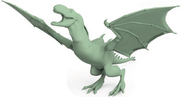</a></td>
              <td class="ptd" height="225" valign="middle">
                <div align="justify">
                  <p><span><strong>Probabilistic Reasoning for Assembly-Based 3D
                        Modeling</strong> <br>
                        <i>[<a href="papers/assembly/ProbReasoningShapeModeling.pdf">PAPER</a>]</i></span><i>[<a

                          href="https://youtu.be/7Abki79WIOY?list=PL1U-zmoZcBllPJ8yG4vDGc_Cjvshero22">VIDEO</a>]</i><span><br>
                        <em>Siddhartha Chaudhuri</em></span><em>*<span>, Evangelos Kalogerakis</span>*<span>, Leonidas Guibas,
                          Vladlen Koltun </span></em><span><br>
                      </span>(*S. Chaudhuri and E. Kalogerakis
                      contributed equally to this work)<span><br>
                      </span><i><span> ACM Transactions on Graphics, Vol. 30,
                          No. 4, 2011<br>
                        </span></i><i>(also in the Proceedings
                        of SIGGRAPH 2011<span>)</span> <span> <br>
                      </span></i><span class="styleAbstract"><br>
                        <em>Abstract: </em><em>Assembly-based modeling
                        is a promising approach to broadening the accessibility
                        of 3D modeling. In assembly-based modeling, new models
                        are assembled from shape components extracted from a
                        database. A key challenge in assembly-based modeling is
                        the identification of relevant components to be
                        presented to the user. In this paper, we introduce a
                        probabilistic reasoning approach to this problem. Given
                        a repository of shapes, our approach learns a
                        probabilistic graphical model that encodes semantic and
                        geometric relationships among shape components. The
                        probabilistic model is used to present components that
                        are semantically and stylistically compatible with the
                        3D model that is being assembled. Our experiments
                        indicate that the probabilistic model increases the
                        relevance of presented components.</em><br>
                    </span> </p>
                </div>
              </td>
            </tr>
            <tr valign="middle">
              <td class="ptd" height="225" width="270" valign="middle"><a href="papers/LabelMeshes/index.html"></a></td>
              <td class="ptd" height="225" valign="middle">
                <div align="justify">
                  <p><span><strong>Learning 3D Mesh Segmentation and Labeling </strong><br>
                        <i>[<a href="papers/LabelMeshes/LabelMeshes.pdf">PAPER</a>]</i>
                      </span><span><i>[<a href="papers/LabelMeshes/index.html">PAGE
                            WITH CODE &amp; DATA</a>]</i><br>
                        <em>Evangelos Kalogerakis, Aaron Hertzmann, Karan Singh</em><br>
                      </span><i><span>ACM Transactions on Graphics, Vol. 29, No.
                          3, 2010 <br>
                        </span>(also in the Proceedings of SIGGRAPH 2010<span>)</span><span>
                          <br>
                        </span></i><span class="styleAbstract"><br>
                        <em>Abstract: </em><em>This paper presents a
                        data-driven approach to simultaneous segmentation and
                        labeling of parts in 3D meshes. An objective function is
                        formulated as a Conditional Random Field model, with
                        terms assessing the consistency of faces with labels,
                        and terms between labels of neighboring faces. The
                        objective function is learned from a collection of
                        labeled training meshes. The algorithm uses hundreds of
                        geometric and contextual label features and learns
                        different types of segmentations for different tasks,
                        without requiring manual parameter tuning. Our algorithm
                        achieves a significant improvement in results over the
                        state-of-the-art when evaluated on the Princeton
                        Segmentation Benchmark, often producing segmentations
                        and labelings comparable to those produced by humans.</em></span>
                  </p>
                </div>
              </td>
            </tr>
            <tr valign="middle">
              <td class="ptd" height="225" width="270" valign="middle"><a href="papers/images2gps/index.html">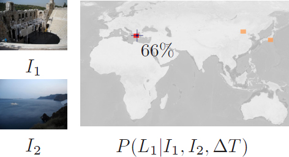</a></td>
              <td class="ptd" height="225" valign="middle">
                <div align="justify">
                  <p><span><strong>Image Sequence Geolocation with Human Travel
                        Priors</strong><em> <br>
[<a href="papers/images2gps/images2gps.pdf">PAPER</a>]
                          [<a href="papers/images2gps/index.html">PAGE</a>]</em><br>
                        <em>Evangelos Kalogerakis, Olga Vesselova, James Hays,
                        Alexei Efros, Aaron Hertzmann</em><br>
                      </span><i><span>Proceedings of the
                          International Conference on Computer Vision (ICCV)
                          2009 </span></i> <i><span class="importantnote">(Selected for Oral
                          Presentation)</span></i><br>
                    <br>
                    <span class="styleAbstract"> <em>Abstract: </em><em>This
                        paper presents a method for estimating geographic
                        location for sequences of time-stamped photographs. A
                        prior distribution over travel describes the likelihood
                        of traveling from one location to another during a given
                        time interval. This distribution is based on a training
                        database of 6 million photographs from Flickr.com. An
                        image likelihood for each location is defined by
                        matching a test photograph against the training
                        database. Inferring location for images in a test
                        sequence is then performed using the Forward-Backward
                        algorithm, and the model can be adapted to individual
                        users as well. Using temporal constraints allows our
                        method to geolocate images without recognizable
                        landmarks, and images with no geographic cues
                        whatsoever. This method achieves a substantial
                        performance improvement over the best-available
                        baseline, and geolocates some users� images with
                        near-perfect accuracy.</em></span> </p>
                </div>
              </td>
            </tr>
            <tr valign="middle">
              <td class="ptd" height="225" width="270" valign="middle"><a href="papers/ddcurvature/index.html">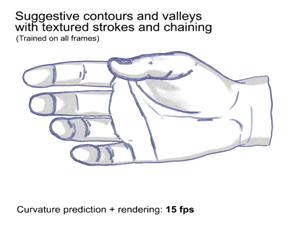</a></td>
              <td class="ptd" height="225" valign="middle">
                <div align="justify">
                  <p><span><strong>Data-driven curvature for real-time line
                        drawing of dynamic scenes</strong> <br>
                        <i>[<a href="papers/ddcurvature/ddcurvature.pdf">PAPER</a>][<a

                            href="https://youtu.be/LlAcH0bDa3g?list=PL1U-zmoZcBllPJ8yG4vDGc_Cjvshero22">VIDEO</a>][<a

                            href="papers/ddcurvature/index.html">PAGE</a>] </i><br>
                        <em>Evangelos Kalogerakis, Derek Nowrouzezahrai,
                          Patricio Simari, James McCrae, Aaron Hertzmann, Karan
                        Singh</em><br>
                      </span><i><span>ACM Transactions on
                          Graphics, Vol. 28, No. 1, 2009 <br>
                          (also in SIGGRAPH 2009</span>)</i><span

                      class="styleAbstract"><br>
                        <br>
                        <em>Abstract: </em><em>This paper presents a
                        method for real-time line drawing of deforming objects.
                        Object-space line drawing algorithms for many types of
                        curves, including suggestive contours, highlights,
                        ridges and valleys, rely on surface curvature and
                        curvature derivatives. Unfortunately, these curvatures
                        and their derivatives cannot be computed in real-time
                        for animated, deforming objects. In a preprocessing
                        step, our method learns the mapping from a
                        low-dimensional set of animation parameters to surface
                        curvatures for a deforming 3D mesh. The learned model
                        can then accurately and efficiently predict curvatures
                        and their derivatives, enabling real-time object-space
                        rendering of suggestive contours and other such curves.
                        This represents an order-of-magnitude speed-up over the
                        fastest existing algorithm capable of estimating
                        curvatures and their derivatives accurately enough for
                        many different types of line drawings. The learned model
                        can generalize to novel animation sequences, and is also
                        very compact, requiring a few megabytes of storage. We
                        demonstrate our method for various types of animated
                        objects, including skeleton-based characters, cloth
                        simulation and facial animation, using a variety of
                        non-photorealistic rendering styles.</em></span></p>
                </div>
              </td>
            </tr>
            <tr valign="middle">
              <td class="ptd" height="225" width="270" valign="middle"><a href="papers/more/multiobjectivesegmentation_sgp.pdf"></a></td>
              <td class="ptd" height="225" valign="middle">
                <div align="justify">
                  <p> <span><strong>Multi-objective shape segmentation and
                        labeling</strong><em><strong> </strong><br>
[<a href="papers/more/multiobjectivesegmentation_sgp.pdf">PAPER</a>]
                          [<a href="papers/more/multiobjectivesegmentation_sgp.avi">VIDEO</a>]</em></span><br>
                      <span><em>Patricio Simari, Derek Nowrouzezahrai, Evangelos Kalogerakis, Karan Singh</em><br>
                      </span><i><span> Computer Graphics Forum, Vol. 28, No. 5,
                          2009<br>
                        </span></i><i>(also in the Proceedings of EG Symposium
                        of Geometry Processing 2009<span>)</span></i><span class="styleAbstract">
                        <br>
                      </span><span class="styleAbstract"><br>
                        <em>Abstract: </em><em>In this paper, we
                        perform segmentation and labeling of shapes based on a
                        simultaneous optimization of multiple heterogenous
                        objectives that capture application-specific
                        segmentation criteria. We present a number of efficient
                        objective functions that capture useful shape adjectives
                        (compact, flat, narrow, perpendicular, etc.)
                        Segmentation descriptions within our framework combine
                        multiple such objective functions with optional labels
                        to define each part. The optimization problem is
                        simplified by proposing weighted Voronoi partitioning as
                        a compact and continuous parametrization of spatially
                        embedded shape segmentations. This partition is
                        automatically labeled to optimize heterogeneous part
                        objectives and the Voronoi centers and their weights
                        optimized using Generalized Pattern Search. We
                        illustrate our framework using several diverse
                        segmentation applications: bounding volume hierarchies
                        for path tracing, and automatic rig and clothing
                        transfer between animation characters.</em></span></p>
                </div>
              </td>
            </tr>
            <tr valign="middle">
              <td class="ptd" height="225" width="270" valign="middle" align="center"><a

                  href="papers/more//DynamicArbitraryBRDF.pdf">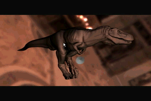</a><span class="copyrights">[animation
                  dataset by Joel Anderson �]</span></td>
              <td class="ptd" height="225" valign="middle">
                <div align="justify">
                  <p> <span><strong>Shadowing Dynamic Scenes with Arbitrary
                        BRDFs</strong><em> <br>
[<a href="papers/more//DynamicArbitraryBRDF.pdf">PAPER</a>]
                          [<a href="https://youtu.be/e1AfOKJlLMQ">VIDEO</a>]</em><br>
                        <em>Derek Nowrouzezahrai, Evangelos Kalogerakis, Eugene
                        Fiume</em><br>
                      </span><i><span>Computer Graphics Forum,
                          Vol. 28, No. 2, 2009 <br>
                        </span></i><i>(also in the Proceedings
                        of Eurographics 2009</i>  <br>
                    <br>
                    <span class="styleAbstract"><em>Abstract: </em>
                      <em>We present a real-time relighting and shadowing method
                        for dynamic scenes with varying lighting, view and
                        BRDFs. Our approach is based on a compact representation
                        of reflectance data that allows for changing the BRDF at
                        run-time and a data-driven method for accurately
                        synthesizing self-shadows on articulated and deformable
                        geometries. Unlike previous self-shadowing approaches,
                        we do not rely on local blocking heuristics. We do not
                        fit a model to the BRDF-weighted visibility, but rather
                        only to the visibility that changes during animation. In
                        this manner, our model is more compact than previous
                        techniques and requires less computation both during
                        fitting and at run-time. Our reflectance product
                        operators can re-integrate arbitrary low-frequency
                        view-dependent BRDF effects on-the-fly and are
                        compatible with all previous dynamic visibility
                        generation techniques as well as our own data-driven
                        visibility model. We apply our reflectance product
                        operators to three different visibility generation
                        models, and our data-driven model can achieve framerates
                        well over 300Hz.</em></span></p>
                </div>
              </td>
            </tr>
            <tr valign="middle">
              <td class="ptd" height="225" width="270" valign="middle"><a href="papers/curvature/index.html">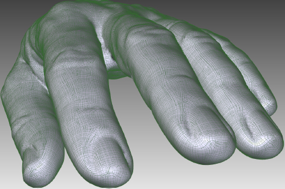</a></td>
              <td class="ptd" height="225" valign="middle">
                <div align="justify">
                  <p><span><strong>Extracting lines of curvature from noisy
                        point clouds</strong><em> <br>
[<a href="papers/curvature/CurvatureCAD.pdf">PAPER</a>]
                          [<a href="papers/curvature/index.html">PAGE</a>]</em><br>
                        <em>Evangelos Kalogerakis, Derek Nowrouzezahrai,
                          Patricio Simari, Karan Singh</em></span><i><br>
                        <span>Special Issue of the Computer-Aided Design on
                          Point-Based Computational Techniques, Vol. 41, No. 4,
                          2009</span></i><span class="styleAbstract"><br>
                        <br>
                        <em>Abstract: We present a robust
                        framework for extracting lines of curvature from point
                        clouds. First, we show a novel approach to denoising the
                        input point cloud using robust statistical estimates of
                        surface normal and curvature which automatically rejects
                        outliers and corrects points by energy minimization.
                        Then the lines of curvature are constructed on the point
                        cloud with controllable density. Our approach is
                        applicable to surfaces of arbitrary genus, with or
                        without boundaries, and is statistically robust to noise
                        and outliers while preserving sharp surface features. We
                        show our approach to be eective over a range of
                        synthetic and real-world input datasets with varying
                        amounts of noise and outliers. The extraction of
                        curvature information can benefit many applications in
                        CAD, computer vision and graphics for point cloud shape
                        analysis, recognition and segmentation. Here, we show
                        the possibility of using the lines of curvature for
                        feature-preserving mesh construction directly from noisy
                        point clouds.</em></span> </p>
                </div>
              </td>
            </tr>
            <tr valign="middle">
              <td class="ptd" height="225" width="270" valign="middle"><a href="papers/more/GeometryDependentPRT_graphite.pdf">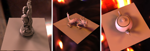</a></td>
              <td class="ptd" height="225" valign="middle">
                <div align="justify"><span><strong>Eigentransport for Efficient
                      and Accurate All-Frequency Relighting</strong><em> <br>
[<a href="papers/more/GeometryDependentPRT_graphite.pdf">PAPER</a>]</em><br>
                      <em>Derek Nowrouzezahrai, Patricio Simari, Evangelos Kalogerakis, Eugene Fiume</em></span><i><br>
                      <span>Proceedings of ACM Graphite 2007 <span class="importantnote">(Best
                          Paper Award)</span></span></i><span class="styleAbstract"><br>
                      <br>
                      <em>Abstract: </em><em> We present a method for
                      creating a geometry-dependent basis for precomputed
                      radiance transfer. Unlike previous PRT bases, ours is
                      derived from principal component analysis of the sampled
                      transport functions at each vertex. It allows for
                      efficient evaluation of shading, has low memory
                      requirements and produces accurate results with few
                      coefficients. We are able to capture all-frequency effects
                      from both distant and near-field dynamic lighting in
                      real-time and present a simple rotation scheme.
                      Reconstruction of the final shading becomes a low-order
                      dot product and is performed on the GPU.</em></span></div>
              </td>
            </tr>
            <tr valign="middle">
              <td class="ptd" height="225" width="270" valign="middle"><a href="papers/curvature/index.html">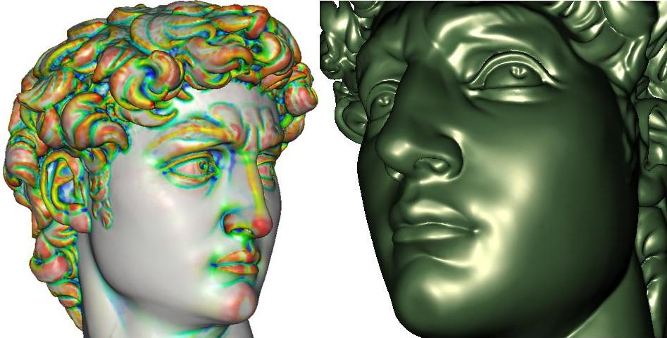</a></td>
              <td class="ptd" height="225" valign="middle">
                <div align="justify"> <span><strong>Robust statistical
                      estimation of curvature on discretized surfaces</strong><em> <br>
[<a href="papers/curvature/CurvatureSGP.pdf">PAPER</a>]
                        [<a href="papers/curvature/index.html">PAGE WITH
                          EXECUTABLE</a>]</em><br>
<em>Evangelos Kalogerakis, Patricio Simari, Derek
                        Nowrouzezahrai, Karan Singh</em></span><i><br>
                      <span>Proceedings of EG Symposium on Geometry Processing
                        2007</span></i><span class="styleAbstract"><br>
                      <br>
                      <em>Abstract:  A robust statistics
                      approach to curvature estimation on discretely sampled
                      surfaces, namely polygon meshes and point clouds, is
                      presented. The method exhibits accuracy, stability and
                      consistency even for noisy, non-uniformly sampled surfaces
                      with irregular configurations. Within an M-estimation
                      framework, the algorithm is able to reject noise and
                      structured outliers by sampling normal variations in an
                      adaptively reweighted neighborhood around each point. The
                      algorithm can be used to reliably derive higher order
                      differential attributes and even correct noisy surface
                      normals while preserving the fine features of the normal
                      and curvature field. The approach is compared with
                      state-of-the-art curvature estimation methods and shown to
                      improve accuracy by up to an order of magnitude across
                      ground truth test surfaces under varying tessellation
                      densities and types as well as increasing degrees of
                      noise. Finally, the benefits of a robust statistical
                      estimation of curvature are illustrated by applying it to
                      the popular applications of mesh segmentation and
                      suggestive contour rendering.</em></span></div>
              </td>
            </tr>
            <tr valign="middle">
              <td class="ptd" height="225" width="270" valign="middle"><a href="papers/more/2006_sgp_simari_kalogerakis_singh.pdf">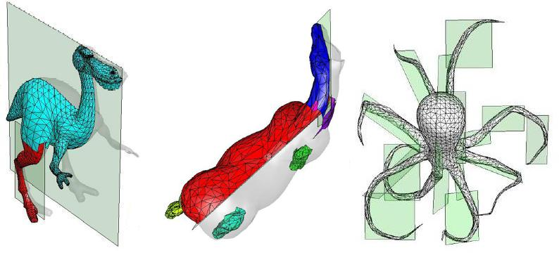</a></td>
              <td class="ptd" height="225" valign="middle">
                <div align="justify"><span><strong>Folding meshes: Hierarchical
                      mesh segmentation based on planar symmetry</strong><em><strong> </strong><br>
[<a href="papers/more/2006_sgp_simari_kalogerakis_singh.pdf">PAPER</a>]</em><br>
                      <em>Patricio Simari, Evangelos Kalogerakis, Karan Singh</em><br>
                    </span><i><span>Proceedings of EG Symposium
                        on Geometry Processing 2006</span></i><span class="styleAbstract"><br>
                      <em><br>
                        Abstract: </em><em>Meshes representing real
                      world objects, both artist-created and scanned, contain a
                      high level of redundancy due to approximate planar
                      reflection symmetries, either global or localized to
                      different subregions. An algorithm is presented for
                      detecting such symmetries and segmenting the mesh into the
                      symmetric and remaining regions. The method has
                      foundations in robust statistics and is resilient to
                      structured outliers which are present in the form of the
                      non symmetric regions of the data. Also introduced is an
                      application of the method: the folding tree data
                      structure. The structure encodes the non redundant regions
                      of the original mesh as well as the reflection planes and
                      is created by the recursive application of the detection
                      method. This structure can then be unfolded to recover the
                      original shape. Applications include mesh compression,
                      repair as well as mesh processing acceleration by limiting
                      computation to non redundant regions and propagation of
                      results.</em></span></div>
              </td>
            </tr>
            <tr valign="middle">
              <td class="ptd" height="225" width="270" valign="middle"><a href="papers/graphicsOntologies/index.html">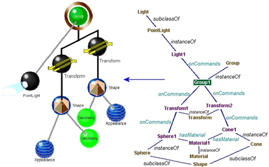</a></td>
              <td class="ptd" height="225" valign="middle">
                <div align="justify"><span><strong>Coupling ontologies with
                      graphics content for Knowledge Driven Visualization</strong><em><strong> </strong><br>
[<a href="papers/graphicsOntologies/graphicsOntologies.pdf">PAPER</a>]
                        [<a href="papers/graphicsOntologies/index.html">PAGE</a>]</em><br>
                      <em>Evangelos Kalogerakis, Nektarios Moumoutzis, Stavros
                      Christodoulakis</em></span><i><br>
                      <span>Proceedings of IEEE Virtual Reality 2006</span></i><span

                    class="styleAbstract"><br>
                      <br>
                      <em>Abstract: </em><em>A great challenge in
                      information visualization today is to provide models and
                      software that effectively integrate the graphics content
                      of scenes with domain-specific knowledge so that the users
                      can effectively query, interpret, personalize and
                      manipulate the visualized information. Moreover, it is
                      important that such applications are interoperable in the
                      semantic web environment and thus, require that the models
                      and software supporting them integrate state-of-the-art
                      international standards for knowledge representation,
                      graphics and multimedia. In this paper, we present a model
                      and a software framework for the semantic web for the
                      development of interoperable intelligent visualization
                      applications that support the coupling of graphics and
                      virtual reality scenes with domain knowledge of different
                      domains. We also provide methods for knowledge driven
                      information visualization and visualization-aided decision
                      making based on inference by reasoning.</em></span> </div>
              </td>
            </tr>
          </tbody>
        </table>
        <br>
        <br>
        <br>
        <table class="ptable" width="100%" cellspacing="0" cellpadding="5">
          <tbody>
            <tr>
              <td>
                <table id="ptable2" width="100%" cellspacing="0" cellpadding="5">
                  <tbody>
                    <tr>
                      <td>
                        <h2><a name="talks"></a>Recent Talks</h2>
                      </td>
                    </tr>
                    <tr>
                      <td>
                        <p> <a href="https://youtu.be/lfd7Y1syMA4">What can go
                            here [in this room]?</a> [invited talk, presented at
                          the <a href="https://learn3dgen.github.io/">CVPR 2020
                            workshop on Learning 3D Generative Models</a>]<br>
                          <a href="talks/mvcnn-shape-analysis-synthesis_v1.25.pdf">
                            Deep learning architectures for 3D shape analysis
                            and synthesis</a> [invited talk, 2017-18, also
                          presented at <a href="https://sites.google.com/site/deepgeometry2017/">ICCV
                            2017 workshop</a>: <a href="https://sites.google.com/site/deepgeometry2017/">Deep
                            Learning Meets Geometry</a>] <a href="talks/CVPR17_Tutorial_MVCNN_3DCNN_v3.pdf"><br>
                            CVPR 2017 Tutorial on 3D Deep learning - Multi-view
                            techniques</a> [<a href="https://3ddl.stanford.edu/">CVPR
                            2017 tutorials</a>]<br>
                          <a href="talks/mvcnn-shape-analysis.pdf">3D Shape
                            Analysis with Multi-view Convolutional Networks</a>
                          [<a href="https://nesg.graphics/">New England Symposium
                            on Graphics 2017</a>]<br>
                          <a href="talks/Machine_Learning_for_Shape_Analysis_and_Processing.pdf">Machine
                            Learning for Shape Analysis and Processing</a> [<a href="https://eurographics2016.pt/state-of-the-art-reports-2/">EG
                            2016 tutorial &amp; state-of-the-art report
                            presentation</a>]<br>
                          <a href="talks/machine_learning_techniques_for_geometric_modeling.pdf">
                            Machine Learning Techniques for Geometric Modeling</a>
                          [<a href="https://www.geometrie.tugraz.at/sgp2015/gradschool.php">SGP
                            2015 grad school</a>]<br>
                          <a href="talks/Data_driven_3D_Shape_Analysis_And_Synthesis.pdf">
                            Data-Driven Shape Analysis and Synthesis</a>
                          [invited talk, 2012-13] </p>
                      </td>
                    </tr>
                  </tbody>
                </table>
              </td>
            </tr>
          </tbody>
        </table>
        <br>
        <br>
        <br>
        <table class="ptable" width="100%" cellspacing="0" cellpadding="5">
          <tbody>
            <tr>
              <td>
                <h2><a name="students"></a>Students </h2>
              </td>
            </tr>
            <tr>
              <td>
                <p> <b> Current students:</b> <br>
				  <a href="https://lodurality.github.io/">Dmitry Petrov</a> (PhD)<br>
				  <a href="https://xjay18.github.io/">Junyi Cao</a> (MS intern)<br>
                  <a href="https://marios2019.github.io/">Marios Louizou</a> (postdoc) <br>
				  <a href="https://gr.linkedin.com/in/nikitas-chatzis-795561274">Nikitas Chatzis</a> (MS intern)<br>                  
				  <a href="https://prady1272.github.io/">Pradyumn Goyal</a> (MS/PhD)<br>                  
				  <a href="https://ngoductuanlhp.github.io/">Tuan Duc Ngo</a> (MS/PhD)<br>
				  <a href="https://vikastmz.github.io/">Vikas Thamizharasan</a> (PhD)<br>
				  <a href="https://www.cyens.org.cy/en-gb/research/pillars-groups/visual-sciences/vcg/people/yiangos-georgiou/">Yiangos Georgiou</a> (PhD, co-supervised with Melinos Averkiou) <br>                  
				
				  <br>
                  <strong> Graduated:</strong><br>
<a href="https://people.cs.umass.edu/%7Ezhanxu/">Zhan Xu </a>(PhD 2023, next position: research scientist Adobe Research) <br> 					
<a href="https://people.cs.umass.edu/%7Edliu/">Difan Liu</a> (PhD 2022, next position: research scientist at Adobe Research)<br>					
<a href="https://hippogriff.github.io/">Gopal Sharma</a> (PhD 2022, next position: senior research scientist at Samsung Research)<br>					  
<a href="https://people.umass.edu/%7Eyangzhou/">Yang Zhou</a> (PhD 2021, next position: research scientist at Adobe Research) <br>
<a href="https://sasikiran1996.github.io/"> </a><a href="https://brotherhuang.github.io/">Haibin Huang</a>(PhD 2017 , next positions: research scientist at Megvii Research and Kuaishou Technology, then Generative AI researcher at ByteDance)<br>				  
<a href="https://happylun.github.io/">Zhaoliang Lun</a>(PhD 2017, next position: software engineer at Google)<br>
<a href="https://sasikiran1996.github.io/">Sasi Kiran Yelamarthi</a> (MS 2020, next position:  senior research engineer at&nbsp; PlusAI)<br>
<a href="https://scholar.google.com/citations?user=4NUg-zkAAAAJ&hl=en">Mohamed Nabail</a> (MS 2020, next position: PhD student at the University of Toronto)<br>
                  <a href="https://brotherhuang.github.io/"></a>                   
                </p>
              </td>
            </tr>
          </tbody>
        </table>
        <br>
        <br>
        <br>
        <table class="ptable" width="100%" cellspacing="0" cellpadding="5">
          <tbody>
            <tr>
              <td>
                <h2><a name="courses"></a>Course information</h2>
              </td>
            </tr>
            <tr>
              <td><span> 		
				  <p><span><b>Courses I am teaching at the Technical University of Crete:</b><br></span>				  					  				 
					  Spring 2025: INF 426 - Generative AI </p>
					  
					 <p><span><b>Courses I taught at UMass Amherst:</b><br></span>				  
				  <a href="courses/game_programming/index.html">
				  Fall 2024: CMPSCI 576 - Game Programming </a><br>
			      <a href="courses/visual_computing/index.html">Spring 2024: CMPSCI 574/674 - Intelligent Visual Computing:
                    A Neural Network Approach</a>
				  <a href="courses/game_programming/index.html"><br>
				  Fall 2023: CMPSCI 576 - Game Programming </a> 				  				  
				  <a href="courses/visual_computing/index.html"><br>
                    Spring 2023: CMPSCI 574/674 - Intelligent Visual Computing:
                    A Neural Network Approach</a><br>			  
				  <a href="courses/game_programming/index.html">Fall
                    2022: CMPSCI 576 - Game Programming </a> 				  
				  <a href="courses/visual_computing/index.html"><br>
                    Spring 2022: CMPSCI 574/674 - Intelligent Visual Computing:
                    A Neural Network Approach</a><br>
				  <a href="courses/game_programming/index.html">Fall
                    2021: CMPSCI 576 - Game Programming </a> 
				  <a href="courses/visual_computing/index.html"><br>
                    Spring 2021: CMPSCI 574/674 - Intelligent Visual Computing:
                    A Neural Network Approach</a><br>
                  <a href="courses/game_programming/index.html">Fall 2020:
                    CMPSCI 590G - Game Programming</a>
				  <a href="courses/game_programming/index.html"><br>
                    Spring 2020: CMPSCI 590G - Game Programming</a> 
				  <a href="courses/visual_computing/index.html"><br>
                    Spring 2019: CMPSCI 574/674 - Intelligent Visual Computing:
                    A Neural Network Approach</a><br>
                  <a href="courses/game_programming/index.html">Spring 2019:
                    CMPSCI 590G - Game Programming</a><br>
                  <a href="courses/visual_computing/index.html">Spring 2018:
                    CMPSCI 590IV/690IV - Intelligent Visual Computing: A Neural
                    Network Approach</a><br>
                  <a href="courses/cg/index.html">Spring 2018: CMPSCI 373/497C -
                    Introduction to Computer Graphics</a><br>
                  <a href="courses/cg/index.html">Spring 2017: CMPSCI 373 -
                    Introduction to Computer Graphics </a><br>
                  <a href="courses/visual_computing/index.html">Fall 2016:
                  CMPSCI 690IV - Intelligent Visual Computing&nbsp;</a><br>
                  <a href="courses/cg/index.html">Spring 2016: CMPSCI 373 -
                    Introduction to Computer Graphics + 373H Honor's Colloquium
              </a><br>
                  <a href="courses/modeling_and_simulation/index.html">Fall
                    2015: CMPSCI 590GC/690GC - 3D Modeling and Simulation
              </a><br>
                  <a href="courses/visual_computing/index.html">Fall 2014:
                    CMPSCI 690IV - Intelligent Visual Computing </a><br>
                  <a href="courses/cg/index_old.html">Spring 2014: CMPSCI 390GC
                    - Introduction to Computer Graphics </a><br>
                  <a href="courses/modeling_and_simulation/index_old.html">Fall
                    2013: CMPSCI 690GC - 3D Modeling and Simulation </a><br>
                  <a href="courses/geom_modeling/index.html">Spring 2013: CMPSCI
                    590GM - Geometric Modeling </a><br>
                <a href="courses/shape_understanding/index.html">Fall 2012:
                  CMPSCI 791SU - Machine Learning for Shape Understanding
				</a></p></span></td>
            </tr>
          </tbody>
        </table>
        <br>
        <br>
        <br>
        <table class="ptable" width="100%" cellspacing="0" cellpadding="5">
          <tbody>
            <tr>
              <td>
                <h2><a name="services"></a>Academic Service</h2>
              </td>
            </tr>
            <tr>
              <td>
				  
                <p><span><b>I served as Papers Chair for:</b><br>
                    </span>
					<span>Eurographics 2024</span><br>
					<span>Shape Modeling International 2018</span></p>

                <p><strong>I have served in the editorial board of:<br>
                  </strong> IEEE Transactions on Pattern Analysis and
                  Machine Intelligence (TPAMI), 2020-2024<br>
                  IEEE Transactions on Visualization &amp; Computer Graphics
                  (TVCG), 2020-2024<br>					
                  Elsevier Computer &amp; Graphics (2018-2021)&nbsp; </p>
				  
                <p><strong>I served as Program Commitee Member or Area Chair in the following conferences:</strong> <br>
				  CVPR 2025  (lead area chair), 2024  (area chair), 2023 (area chair), 2021 (area chair) <br>
                  ICCV 2025 (lead area chair), 2023 (area chair), 2021 (area chair)<br>                  				  					
				  ECCV 2024 (area chair), 2022 (area chair)<br>
                  NIPS 2025 (area chair), 2024 (area chair)<br>					
                  SIGGRAPH 2020 (technical papers COI coodinator)<br>
                  SIGGRAPH ASIA 2018-2019 (technical papers), 2015 (technical briefs) <br>
                  Eurographics 2020-2021 (technical papers), 2018 (technical papers), 2015 (short papers), 2014 (short papers)<br>
                  Symposium on Geometry Processing 2019-2020 (technical papers), 2014-2017 (technical papers), 2012 (technical papers)<br>
                  Shape Modeling International 2016-2017 (technical papers), 2013-2014 (technical papers)<br>

                </p>
              </td>
            </tr>
          </tbody>
        </table>
        <br>
        <br>
        <table class="ptable" width="100%" cellspacing="0" cellpadding="5" align="center">
          <tbody>
            <tr valign="middle" align="center">
              <td></td>
            </tr>
          </tbody>
        </table>
        <br>
        <br>
        <table cellspacing="0" cellpadding="5" align="right">
          <tbody>
            <tr>
              <td>
                <p align="right"><span class="copyrights"> Copyright � Evangelos
                    Kalogerakis, 2005-2023</span></p>
              </td>
            </tr>
          </tbody>
        </table>
        <br>
      </div>
    </center>
  </body>
</html>
